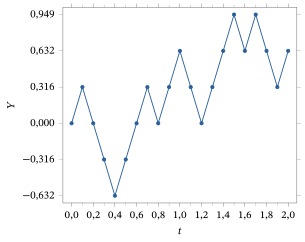
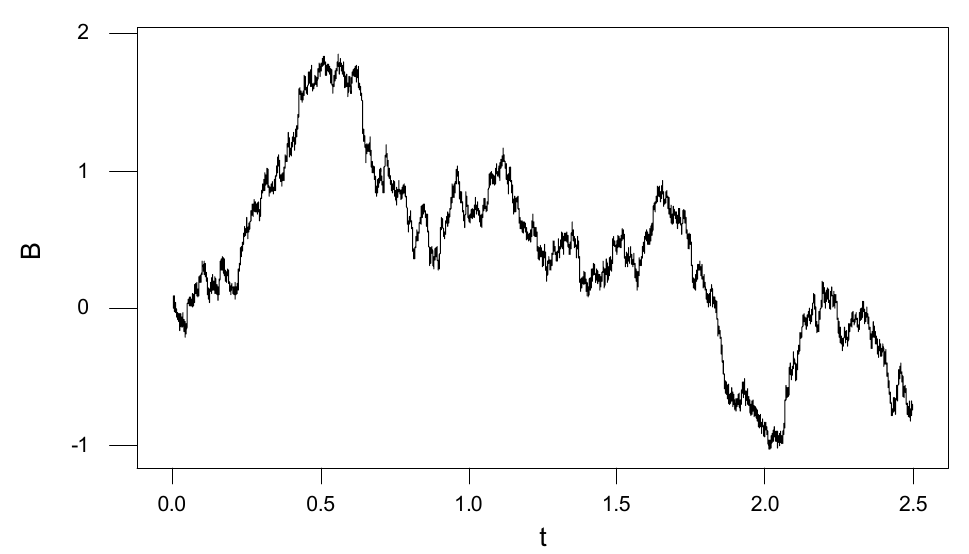

Capítulo 11Tópico Avançado — Processos Estocásticos
Esboço do capítulo
- Seção 1 Passeio Aleatório Simples
- Seção 2 Cadeias de Markov
- Seção 3 Monte Carlo via Cadeias de Markov
- Seção 4 Martingais
- Seção 5 Movimento Browniano
- Seção 6 Processos de Poisson
- Seção 7 Demonstrações Adicionais
Neste capítulo, consideramos processos estocásticos, que são processos que evoluem aleatoriamente no tempo. Isto é, em vez de considerar variáveis aleatórias fixas \(X\), \(Y\) etc., ou mesmo sequências de variáveis aleatórias independentes e identicamente distribuídas1 (i.i.d.), consideraremos sequências \(X_0, X_1, X_2, \ldots\), em que \(X_n\) representa alguma quantidade aleatória no instante \(n\). Em geral, o valor \(X_n\) no instante \(n\) pode depender da quantidade \(X_{n-1}\) no instante \(n - 1\), ou até dos valores \(X_m\) em outros instantes \(m < n\). Os processos estocásticos têm um “sabor” diferente do das variáveis aleatórias comuns: como evoluem no tempo, parecem mais “vivos”.
Começamos com um caso simples, mas muito interessante: o passeio aleatório simples2.
11.1 Passeio Aleatório Simples
O passeio aleatório simples pode ser visto como um modelo para jogos de azar repetidos. Mais precisamente, suponha que você comece com US$ \(a\) e faça repetidamente apostas de US$ 1. Em cada aposta, você tem probabilidade \(p\) de ganhar US$ 1 e probabilidade \(q\) de perder US$ 1, em que \(p + q = 1\). Se \(X_n\) é a quantia de dinheiro que você tem no instante \(n\) (daqui em diante, sua fortuna no instante \(n\)), então \(X_0 = a\), enquanto \(X_1\) pode ser \(a + 1\) ou \(a - 1\), conforme você ganhe ou perca a primeira aposta. Em seguida, \(X_2\) pode ser \(a + 2\) (se você ganhar as duas primeiras apostas), ou \(a\) (se ganhar uma vez e perder uma vez), ou \(a - 2\) (se perder as duas primeiras apostas). Continuando assim, obtemos toda uma sequência \(X_0, X_1, X_2, \ldots\) de valores aleatórios, que correspondem à sua fortuna nos instantes \(0, 1, 2, \ldots\).
Chamaremos o processo estocástico3 \(\{X_n\}\) de passeio aleatório simples. Outra forma de definir esse modelo é partir de variáveis aleatórias \(\{Z_i\}\) i.i.d. com \(P(Z_i = 1) = p\) e \(P(Z_i = -1) = 1 - p \equiv q\), em que \(0 < p < 1\). (Aqui, \(Z_i = 1\) se você ganha a \(i\)-ésima aposta, e \(Z_i = -1\) se você perde a \(i\)-ésima aposta.) Tomamos então \(X_0 = a\) e, para \(n \ge 1\), definimos \[ X_n = a + Z_1 + Z_2 + \cdots + Z_n . \]
Vejamos um exemplo específico disso.
Considere o passeio aleatório simples com \(a = 8\) e \(p = 1/3\); assim, você começa com US$ 8 e tem probabilidade \(1/3\) de ganhar cada aposta. Então a probabilidade de você ter US$ 9 depois de uma aposta é dada por \[ P(X_1 = 9) = P(8 + Z_1 = 9) = P(Z_1 = 1) = 1/3, \] como deveria ser. Além disso, a probabilidade de você ter US$ 7 depois de uma aposta é dada por \[ P(X_1 = 7) = P(8 + Z_1 = 7) = P(Z_1 = -1) = 2/3. \] Por outro lado, a probabilidade de você ter US$ 10 depois de duas apostas é dada por \[ P(X_2 = 10) = P(8 + Z_1 + Z_2 = 10) = P(Z_1 = Z_2 = 1) = (1/3)(1/3) = 1/9. \]
Considere novamente o passeio aleatório simples com \(a = 8\) e \(p = 1/3\). Então a probabilidade de você ter US$ 7 depois de três apostas é dada por \[ P(X_3 = 7) = P(8 + Z_1 + Z_2 + Z_3 = 7) = P(Z_1 + Z_2 + Z_3 = -1). \] Ora, há três maneiras diferentes de termos \(Z_1 + Z_2 + Z_3 = -1\), a saber: (a) \(Z_1 = 1\), enquanto \(Z_2 = Z_3 = -1\);(b) \(Z_2 = 1\), enquanto \(Z_1 = Z_3 = -1\); ou(c) \(Z_3 = 1\), enquanto \(Z_1 = Z_2 = -1\).
Cada uma dessas três opções tem probabilidade \((1/3)(2/3)(2/3)\). Logo, \[ P(X_3 = 7) = (1/3)(2/3)(2/3) + (1/3)(2/3)(2/3) + (1/3)(2/3)(2/3) = 4/9. \]
Se o número de apostas for muito maior que três, fica cada vez menos cômodo calcular probabilidades da maneira acima. É preciso uma abordagem mais sistemática, que é o que veremos a seguir.
11.1.1 A Distribuição da Fortuna
Primeiro calculamos a distribuição de \(X_n\), isto é, a probabilidade de sua fortuna \(X_n\) depois de \(n\) apostas assumir os vários valores possíveis.
Seja \(\{X_n\}\) o passeio aleatório simples como antes, e seja \(n\) um inteiro positivo. Se \(k\) é um inteiro tal que \(-n \le k \le n\) e \(n + k\) é par, então \[ P(X_n = a + k) = \binom{n}{\frac{n+k}{2}} p^{(n+k)/2} q^{(n-k)/2}. \] Para todos os outros valores de \(k\), temos \(P(X_n = a + k) = 0\). Além disso, \(E(X_n) = a + n(2p - 1)\).
Veja a Seção 11.7.
Esse teorema nos dá a distribuição inteira, e o valor esperado4, da fortuna \(X_n\) no instante \(n\).
Suponha que \(p = 1/3\), \(n = 8\) e \(a = 1\). Então \(P(X_n = 6) = 0\), porque \(6 = 1 + 5\) e \(n + 5 = 13\) não é par. Além disso, \(P(X_n = 13) = 0\), porque \(13 = 1 + 12\) e \(12 > n\). Por outro lado, \begin{align*} P(X_n = 5) &= P(X_n = 1 + 4) = \binom{n}{\frac{n+4}{2}} p^{(n+4)/2} q^{(n-4)/2} = \binom{8}{6} (1/3)^6 (2/3)\\ &= \frac{8 \cdot 7}{2} (1/3)^6 (2/3)^1 = 0{,}0256. \end{align*} Além disso, \(E(X_n) = a + n(2p - 1)\) \({}= 1 + 8(2/3 - 1)\) \({}= -5/3\).
Quanto a \(E(X_n)\), obtemos imediatamente o corolário a seguir.
Se \(p = 1/2\), então \(E(X_n) = a\) para todo \(n \ge 0\). Se \(p < 1/2\), então \(E(X_n) < a\) para todo \(n \ge 1\). Se \(p > 1/2\), então \(E(X_n) > a\) para todo \(n \ge 1\).
Esse corolário tem a seguinte interpretação. Se \(p = 1/2\), então o jogo é justo, isto é, você e seu adversário têm a mesma chance de ganhar cada aposta. Assim, o corolário diz que, em jogos justos, sua fortuna esperada \(E(X_n)\) nunca muda em relação ao valor inicial, \(a\).
Por outro lado, se \(p < 1/2\), então o jogo é desfavorável, isto é, as chances do seu adversário são melhores que as suas. Nesse caso, o corolário diz que sua fortuna esperada vai diminuir, isto é, ficar abaixo do valor inicial \(a\). Da mesma forma, se \(p > 1/2\), então o jogo é favorável, e o corolário diz que sua fortuna esperada vai aumentar, isto é, ficar acima do valor inicial \(a\).
É claro que, num cassino de verdade, o jogo é sempre desfavorável (é assim que o cassino tem lucro). Logo, num cassino de verdade, a quantia média de dinheiro com que você sai será sempre menor que a quantia com que você entrou!
Suponha que \(a = 10\) e \(p = 1/4\). Então \(E(X_n) = 10 + n(2p - 1) = 10 - 3n/4\). Logo, temos sempre \(E(X_n) \le 10\) e, de fato, \(E(X_n) < 0\) se \(n \ge 14\). Isto é, sua fortuna esperada nunca passa do valor inicial de US$ 10 e, na verdade, fica negativa a partir de 14 apostas.
Por fim, observamos de passagem que é possível alterar suas probabilidades mudando sua estratégia de jogo, como no exemplo a seguir. Portanto, a análise anterior vale apenas para a estratégia de apostar exatamente US$ 1 de cada vez.
Considere a estratégia de jogo “dobre até ganhar”, definida da seguinte forma. Primeiro apostamos US$ 1. Cada vez que perdemos, dobramos a aposta na rodada seguinte. Assim que ganhamos uma vez, paramos de jogar (isto é, apostamos zero daí em diante).
É fácil ver que, com essa estratégia, estaremos US$ 1 à frente assim que ganharmos uma aposta (o que tem de acontecer em algum momento, já que \(p > 0\)). Logo, com probabilidade 1, ganharemos US$ 1 com essa estratégia para qualquer valor positivo de \(p\).
Isso é bastante surpreendente, porque, se \(0 < p < 1/2\), as chances nesse jogo estão contra nós. Parece, então, que “enganamos o destino”, e de fato enganamos. Por outro lado, podemos precisar perder uma quantia de dinheiro arbitrariamente grande antes de ganhar nosso US$ 1; assim, é necessário “capital infinito” para seguir essa estratégia. Se houver apenas capital finito disponível, então é impossível enganar o destino dessa maneira. Para uma demonstração disso, veja livros de probabilidade mais avançados, por exemplo, a página 64 de A First Look at Rigorous Probability Theory, segunda edição, de J. S. Rosenthal (World Scientific Publishing, Singapura, 2006).
11.1.2 O Problema da Ruína do Jogador
A subseção anterior considerou a distribuição e o valor esperado da fortuna \(X_n\) num instante fixo \(n\). Aqui consideramos o problema da ruína do jogador5, que exige considerar muitos valores de \(n\) ao mesmo tempo, isto é, considera a evolução temporal do processo.
Seja \(\{X_n\}\) o passeio aleatório simples como antes, para alguma fortuna inicial \(a\) e alguma probabilidade \(p\) de ganhar cada aposta. Suponha que \(a\) seja um inteiro positivo. Além disso, seja \(c > a\) algum outro inteiro. A pergunta da ruína do jogador é: se você apostar US$ 1 repetidamente, qual é a probabilidade de alcançar uma fortuna de US$ \(c\) antes de perder todo o seu dinheiro, chegando a uma fortuna de US$ 0? Em outras palavras, o passeio aleatório6 atingirá \(c\) antes de atingir 0? Informalmente, qual é a probabilidade de o jogador ficar rico (isto é, ter US$ \(c\)) antes de ir à falência?
Mais formalmente, sejam \begin{align*} \tau_0 &= \min\{n \ge 0 : X_n = 0\},\\ \tau_c &= \min\{n \ge 0 : X_n = c\} \end{align*} os tempos de primeira passagem por 0 e por \(c\), respectivamente. Isto é, \(\tau_0\) é o primeiro instante em que sua fortuna chega a 0, enquanto \(\tau_c\) é o primeiro instante em que sua fortuna chega a \(c\).
A pergunta da ruína do jogador é: qual é \[ P(\tau_c < \tau_0), \] a probabilidade de atingir \(c\) antes de atingir 0? Essa pergunta não é tão fácil de responder, porque não há limite para quanto tempo pode levar até que \(c\) ou 0 seja atingido. Logo, não basta calcular as probabilidades depois de 10 apostas, ou de 20 apostas, ou de 100 apostas, ou mesmo de 1.000.000 de apostas. Felizmente, é possível responder a essa pergunta, como veremos a seguir.
Seja \(\{X_n\}\) o passeio aleatório simples, com alguma fortuna inicial \(a\) e probabilidade \(p\) de ganhar cada aposta. Suponha que \(0 < a < c\). Então a probabilidade \(P(\tau_c < \tau_0)\) de atingir \(c\) antes de 0 é dada por \[ P(\tau_c < \tau_0) = \begin{cases} a/c & p = 1/2\\[4pt] \dfrac{1 - \left(\frac{q}{p}\right)^a}{1 - \left(\frac{q}{p}\right)^c} & p \ne 1/2. \end{cases} \]
Veja a Seção 11.7 para a demonstração.
Vejamos algumas aplicações desse resultado.
Suponha que você comece com US$ 5 (isto é, \(a = 5\)) e que seu objetivo seja chegar a US$ 10 antes de ir à falência (isto é, \(c = 10\)). Se \(p = 0{,}500\), sua probabilidade de sucesso é \(a/c = 0{,}500\). Se \(p = 0{,}499\), sua probabilidade de sucesso é dada por \[ \left(1 - \left(\frac{0{,}501}{0{,}499}\right)^5\right) \left(1 - \left(\frac{0{,}501}{0{,}499}\right)^{10}\right)^{-1}, \] que é aproximadamente \(0{,}495\). Se \(p = 0{,}501\), sua probabilidade de sucesso é dada por \[ \left(1 - \left(\frac{0{,}499}{0{,}501}\right)^5\right) \left(1 - \left(\frac{0{,}499}{0{,}501}\right)^{10}\right)^{-1}, \] que é aproximadamente \(0{,}505\). Vemos, assim, que neste caso pequenas mudanças em \(p\) levam a pequenas mudanças na probabilidade de vencer na ruína do jogador.
Suponha agora que você comece com US$ 5000 (isto é, \(a = 5000\)) e que seu objetivo seja chegar a US$ 10.000 antes de ir à falência (isto é, \(c = 10.000\)). Se \(p = 0{,}500\), sua probabilidade de sucesso é \(a/c = 0{,}500\), como antes. Por outro lado, se \(p = 0{,}499\), sua probabilidade de sucesso é dada por \[ \left(1 - \left(\frac{0{,}501}{0{,}499}\right)^{5000}\right) \left(1 - \left(\frac{0{,}501}{0{,}499}\right)^{10.000}\right)^{-1}, \] que é aproximadamente \(2 \times 10^{-9}\), isto é, duas partes em um bilhão! Por fim, se \(p = 0{,}501\), sua probabilidade de sucesso é dada por \[ \left(1 - \left(\frac{0{,}499}{0{,}501}\right)^{5000}\right) \left(1 - \left(\frac{0{,}499}{0{,}501}\right)^{10.000}\right)^{-1}, \] que é extremamente próxima de 1. Vemos, assim, que neste caso pequenas mudanças em \(p\) levam a mudanças enormes na probabilidade de vencer na ruína do jogador. Por exemplo, mesmo uma desvantagem minúscula em cada aposta pode levar a uma desvantagem muito grande no longo prazo! A razão é que, para ir de 5000 a 10.000, é preciso fazer muitas apostas, de modo que pequenas mudanças em \(p\) têm um efeito enorme no total.
Por fim, observamos que também é possível usar o resultado da ruína do jogador para calcular \(P(\tau_0 < \infty)\), a probabilidade de o passeio algum dia atingir 0 (ou, de forma equivalente, de você algum dia perder todo o seu dinheiro), como segue.
Seja \(\{X_n\}\) o passeio aleatório simples, com fortuna inicial \(a > 0\) e probabilidade \(p\) de ganhar cada aposta. Então a probabilidade \(P(\tau_0 < \infty)\) de o passeio algum dia atingir 0 é dada por \[ P(\tau_0 < \infty) = \begin{cases} 1 & p \le 1/2\\ (q/p)^a & p > 1/2. \end{cases} \]
Veja a Seção 11.7 para a demonstração.
Suponha que \(a = 2\) e \(p = 2/3\). Então a probabilidade de você acabar perdendo todo o seu dinheiro é dada por \((q/p)^a = ((1/3)/(2/3))^2 = 1/4\). Assim, começando com apenas US$ 2, vemos que em 3/4 das vezes você poderá apostar para sempre sem nunca perder todo o seu dinheiro.
Por outro lado, se \(p \le 1/2\), então, por maior que seja \(a\), é certo que você acabará perdendo todo o seu dinheiro.
Resumo da Seção 11.1
- Um passeio aleatório simples é uma sequência \(\{X_n\}\) de variáveis aleatórias, com \(X_0 = 1\)7 e \(P(X_{n+1} = X_n + 1)\) \({}= p = 1 - P(X_{n+1} = X_n - 1)\).
- Segue-se que \[ P(X_n = a + k) = \binom{n}{\frac{n+k}{2}} p^{(n+k)/2} q^{(n-k)/2} \] para \(k = -n, -n + 2, -n + 4, \ldots, n\), e \(E(X_n) = a + n(2p - 1)\).
- Se \(0 < a < c\), então a probabilidade da ruína do jogador de alcançar \(c\) antes de 0 é igual a \(a/c\) se \(p = 1/2\) e, caso contrário, a \[ (1 - ((1 - p)/p)^a)/(1 - ((1 - p)/p)^c). \]
Exercícios
11.1.1 Seja \(\{X_n\}\) o passeio aleatório simples, com fortuna inicial \(a = 12\) e probabilidade \(p = 1/3\) de ganhar cada aposta. Calcule \(P(X_n = x)\) para os seguintes valores de \(n\) e \(x\). (a) \(n = 0\), \(x = 13\)(b) \(n = 1\), \(x = 12\)(c) \(n = 1\), \(x = 13\)(d) \(n = 1\), \(x = 11\)(e) \(n = 1\), \(x = 14\)(f) \(n = 2\), \(x = 12\)(g) \(n = 2\), \(x = 13\)(h) \(n = 2\), \(x = 14\)(i) \(n = 2\), \(x = 15\)(j) \(n = 20\), \(x = 15\)(k) \(n = 20\), \(x = 16\)(l) \(n = 20\), \(x = -18\)(m) \(n = 20\), \(x = 10\)
11.1.2 Seja \(\{X_n\}\) o passeio aleatório simples, com fortuna inicial \(a = 5\) e probabilidade \(p = 2/5\) de ganhar cada aposta. (a) Calcule \(P(X_1 = 6, X_2 = 5)\).(b) Calcule \(P(X_1 = 4, X_2 = 5)\).(c) Calcule \(P(X_2 = 5)\).(d) Qual é a relação entre as quantidades dos itens (a), (b) e (c)? Por que isso acontece?
11.1.3 Seja \(\{X_n\}\) o passeio aleatório simples, com fortuna inicial \(a = 7\) e probabilidade \(p = 1/6\) de ganhar cada aposta. (a) Calcule \(P(X_1 = X_3 = 8)\).(b) Calcule \(P(X_1 = 6, X_3 = 8)\).(c) Calcule \(P(X_3 = 8)\).(d) Qual é a relação entre as quantidades dos itens (a), (b) e (c)? Por que isso acontece?
11.1.4 Suponha que \(a = 1000\) e \(p = 0{,}49\). (a) Calcule \(E(X_n)\) para \(n = 0, 1, 2, 10, 20, 100\) e 1000.(b) Quão grande \(n\) precisa ser para que \(E(X_n) < 0\)?
11.1.5 Seja \(\{X_n\}\) o passeio aleatório simples, com fortuna inicial \(a\) e probabilidade \(p = 0{,}499\) de ganhar cada aposta. Calcule a probabilidade da ruína do jogador \(P(\tau_c < \tau_0)\) para os seguintes valores de \(a\) e \(c\). Interprete seus resultados em palavras. (a) \(a = 9\), \(c = 10\)(b) \(a = 90\), \(c = 100\)(c) \(a = 900\), \(c = 1000\)(d) \(a = 9000\), \(c = 10.000\)(e) \(a = 90.000\), \(c = 100.000\)(f) \(a = 900.000\), \(c = 1.000.000\)
11.1.6 Seja \(\{X_n\}\) o passeio aleatório simples, com fortuna inicial \(a = 10\) e probabilidade \(p\) de ganhar cada aposta. Calcule \(P(\tau_0 < \infty)\) para \(p = 0{,}4\) e também para \(p = 0{,}6\). Interprete seus resultados em palavras.
11.1.7 Seja \(\{X_n\}\) o passeio aleatório simples, com fortuna inicial \(a = 5\) e probabilidade \(p = 1/4\) de ganhar cada aposta. (a) Calcule \(P(X_1 = 6)\).(b) Calcule \(P(X_1 = 4)\).(c) Calcule \(P(X_2 = 7)\).(d) Calcule \(P(X_2 = 7 \mid X_1 = 6)\).(e) Calcule \(P(X_2 = 7 \mid X_1 = 4)\).(f) Calcule \(P(X_1 = 6 \mid X_2 = 7)\).(g) Explique por que a resposta do item (f) é igual ao que é.
11.1.8 Seja \(\{X_n\}\) o passeio aleatório simples, com fortuna inicial \(a = 1000\) e probabilidade \(p = 2/5\) de ganhar cada aposta. (a) Calcule \(E(X_1)\).(b) Calcule \(E(X_{10})\).(c) Calcule \(E(X_{100})\).(d) Calcule \(E(X_{1000})\).(e) Encontre o menor valor de \(n\) tal que \(E(X_n) \le 0\).
11.1.9 Seja \(\{X_n\}\) o passeio aleatório simples, com fortuna inicial \(a = 100\) e probabilidade \(p = 18/38\) de ganhar cada aposta (como ao apostar no vermelho na roleta). (a) Calcule \(P(X_1 \ge a)\).(b) Calcule \(P(X_2 \ge a)\).(c) Calcule \(P(X_3 \ge a)\).(d) Tente adivinhar o valor de \(\lim_{n \to \infty} P(X_n \ge a)\).(e) Interprete o item (d) em linguagem simples.
Problemas
11.1.10 Suponha que você comece com US$ 10 e aposte repetidamente US$ 2 (em vez de US$ 1), com probabilidade \(p\) de ganhar a cada vez. Suponha que seu objetivo seja US$ 100, isto é, você continua apostando até perder todo o seu dinheiro ou chegar a US$ 100. (a) Em função de \(p\), qual é a probabilidade de você chegar a US$ 100 antes de perder todo o seu dinheiro? Não deixe de justificar sua solução. (Sugestão: talvez você se veja dividindo tanto 10 quanto 100 por 2.)(b) Suponha que \(p = 0{,}4\). Calcule um valor numérico para a solução do item (a).(c) Compare as probabilidades do item (b) com as probabilidades correspondentes se você apostar apenas US$ 1 de cada vez. Qual é maior?(d) Repita o item (b) para o caso em que você aposta US$ 10 de cada vez. A probabilidade de sucesso aumenta ou diminui?
Desafios
11.1.11 Prove que a fórmula da probabilidade da ruína do jogador \(P(\tau_c < \tau_0)\) é uma função contínua de \(p\), provando que ela é contínua em \(p = 1/2\). Isto é, prove que \[ \lim_{p \to 1/2} \frac{1 - ((1 - p)/p)^a}{1 - ((1 - p)/p)^c} = \frac{a}{c}. \]
Tópicos para discussão
11.1.12 Suponha que você jogue roleta repetidamente num cassino de verdade, apostando a mesma quantia a cada vez e continuando para sempre enquanto tiver dinheiro para apostar. É certo que você acabará perdendo todo o seu dinheiro? Por quê?
11.1.13 No Problema 11.1.10, itens (c) e (d), você consegue explicar intuitivamente por que as probabilidades mudam do jeito que mudam à medida que aumentamos a quantia apostada a cada vez?
11.1.14 Suponha que você comece em \(a\) e precise chegar a \(c\), em que \(c > a > 0\). Você precisa continuar jogando até chegar a \(c\) ou a 0. Suponha que você esteja jogando um jogo desfavorável8 (isto é, \(p < 1/2\)), mas possa escolher quanto apostar a cada vez (isto é, pode apostar US$ 1, ou US$ 2, ou mais, embora, é claro, não possa apostar mais do que tem). Que valores de aposta você acha9 que maximizarão sua probabilidade de sucesso, isto é, maximizarão \(P(\tau_c < \tau_0)\)? (Sugestão: os resultados do Problema 11.1.10 podem dar uma pista.)
11.2 Cadeias de Markov
Intuitivamente, uma cadeia de Markov10 representa o movimento aleatório de algum objeto. Escreveremos \(X_n\) para a posição (ou valor) do objeto no instante \(n\). Há então regras que dão as probabilidades de para onde o objeto vai saltar em seguida.
Uma cadeia de Markov requer um espaço de estados11 \(S\), que é o conjunto de todos os lugares aonde o objeto pode ir. (Por exemplo, talvez \(S = \{1, 2, 3\}\), ou \(S = \{\text{alto}, \text{baixo}\}\), ou \(S\) seja o conjunto de todos os inteiros positivos.)
Uma cadeia de Markov requer também probabilidades de transição12, que dão as probabilidades de para onde o objeto vai saltar em seguida. Especificamente, para \(i, j \in S\), o número \(p_{ij}\) é a probabilidade de que, se o objeto está em \(i\), ele salte em seguida para \(j\). Assim, a coleção \(\{p_{ij} : i, j \in S\}\) de probabilidades de transição satisfaz \(p_{ij} \ge 0\) para todos os \(i, j \in S\), e \[ \sum_{j \in S} p_{ij} = 1 \] para cada \(i \in S\).
Precisamos também considerar onde a cadeia de Markov começa. Muitas vezes, simplesmente tomaremos \(X_0 = s\) para algum estado particular \(s \in S\). Mais geralmente, poderíamos ter uma distribuição inicial13 \(\{\mu_i : i \in S\}\), em que \(\mu_i = P(X_0 = i)\). Nesse caso, precisamos de \(\mu_i \ge 0\) para cada \(i \in S\), e \[ \sum_{i \in S} \mu_i = 1. \]
Resumindo, aqui \(S\) é o espaço de estados de todos os lugares aonde o objeto pode ir; \(\mu_i\) representa a probabilidade de que o objeto comece no ponto \(i\); e \(p_{ij}\) representa a probabilidade de que, se o objeto está no ponto \(i\), ele salte então para o ponto \(j\) no passo seguinte. Em termos da sequência de valores aleatórios \(X_0, X_1, X_2, \ldots\), temos então que \[ P(X_{n+1} = j \mid X_n = i) = p_{ij} \] para todo inteiro positivo \(n\) e quaisquer \(i, j \in S\). Observe que exigimos também que essa probabilidade de salto não dependa da história anterior da cadeia. Isto é, exigimos que \[ P(X_{n+1} = j \mid X_n = i, X_{n-1} = x_{n-1}, \ldots, X_0 = x_0) = p_{ij} \] para todo \(n\) e todos os \(i, j, x_0, \ldots, x_{n-1} \in S\).
11.2.1 Exemplos de Cadeias de Markov
Apresentamos aqui alguns exemplos de cadeias de Markov.
Seja \(S = \{1, 2, 3\}\), formado por apenas três elementos, e defina as probabilidades de transição por \(p_{11} = 0\), \(p_{12} = 1/2\), \(p_{13} = 1/2\), \(p_{21} = 1/3\), \(p_{22} = 1/3\), \(p_{23} = 1/3\), \(p_{31} = 1/4\), \(p_{32} = 1/4\) e \(p_{33} = 1/2\). Isso significa que, por exemplo, se a cadeia está no estado 3, então ela tem probabilidade \(1/4\) de saltar para o estado 1 no próximo salto, probabilidade \(1/4\) de saltar para o estado 2 no próximo salto e probabilidade \(1/2\) de permanecer no estado 3 no próximo salto.
Essa cadeia de Markov salta pelos três pontos \(\{1, 2, 3\}\) de um modo aleatório e interessante. Por exemplo, se ela começa no ponto 1, então pode saltar para 2 ou para 3 (com probabilidade \(1/2\) cada). Se ela salta para (digamos) 3, então no passo seguinte pode saltar para 1 ou 2 (probabilidade \(1/4\) cada) ou para 3 (probabilidade \(1/2\)). Ela continua fazendo esses saltos aleatórios para sempre.
Observe que também podemos escrever as probabilidades de transição \(p_{ij}\) em forma de matriz, como \[ (p_{ij}) = \begin{pmatrix} 0 & 1/2 & 1/2 \\ 1/3 & 1/3 & 1/3 \\ 1/4 & 1/4 & 1/2 \end{pmatrix} \] (de modo que \(p_{31} = 1/4\) etc.). A matriz \(\bigl(p_{ij}\bigr)\) é então chamada de matriz estocástica14. Essa representação matricial às vezes é conveniente.
De novo, seja \(S = \{1, 2, 3\}\). Desta vez, defina as probabilidades de transição \(\bigl\{p_{ij}\bigr\}\) em forma de matriz, como \[ (p_{ij}) = \begin{pmatrix} 1/4 & 1/4 & 1/2 \\ 1/3 & 1/3 & 1/3 \\ 0{,}01 & 0{,}01 & 0{,}98 \end{pmatrix}. \] Isso também define uma cadeia de Markov em \(S\). Por exemplo, a partir do estado 3, há probabilidade 0,01 de saltar para o estado 1, probabilidade 0,01 de saltar para o estado 2 e probabilidade 0,98 de ficar no estado 3.
Seja \(S = \{\text{quarto}, \text{cozinha}, \text{sala}\}\). Defina as probabilidades de transição \(\{p_{ij}\}\) em forma de matriz por \[ (p_{ij}) = \begin{pmatrix} 1/4 & 1/4 & 1/2 \\ 0 & 0 & 1 \\ 0{,}01 & 0{,}01 & 0{,}98 \end{pmatrix}. \] Isso define uma cadeia de Markov em \(S\). Por exemplo, a partir do quarto, a cadeia tem probabilidade \(1/4\) de ficar no quarto, probabilidade \(1/4\) de saltar para a cozinha e probabilidade \(1/2\) de saltar para a sala.
Desta vez, seja \(S = \{1, 2, 3, 4\}\), e defina as probabilidades de transição \(\{p_{ij}\}\) em forma de matriz, como \[ (p_{ij}) = \begin{pmatrix} 0{,}2 & 0{,}4 & 0 & 0{,}4 \\ 0{,}4 & 0{,}2 & 0{,}4 & 0 \\ 0 & 0{,}4 & 0{,}2 & 0{,}4 \\ 0{,}4 & 0 & 0{,}4 & 0{,}2 \end{pmatrix}. \] Isso define uma cadeia de Markov em \(S\). Por exemplo, a partir do estado 4, ela tem probabilidade 0,4 de saltar para o estado 1, mas probabilidade 0 de saltar para o estado 2.
Desta vez, seja \(S = \{1, 2, 3, 4, 5, 6, 7\}\), e defina as probabilidades de transição \(\{p_{ij}\}\) em forma de matriz, como \[ (p_{ij}) = \begin{pmatrix} 1 & 0 & 0 & 0 & 0 & 0 & 0 \\ 1/2 & 0 & 1/2 & 0 & 0 & 0 & 0 \\ 0 & 1/5 & 4/5 & 0 & 0 & 0 & 0 \\ 0 & 0 & 1/3 & 1/3 & 1/3 & 0 & 0 \\ 1/10 & 0 & 0 & 0 & 7/10 & 0 & 1/5 \\ 0 & 0 & 0 & 0 & 0 & 0 & 1 \\ 0 & 0 & 0 & 0 & 0 & 1 & 0 \end{pmatrix}. \] Isso define uma cadeia de Markov (complicada!) em \(S\).
Seja \(S = \{0, 1, 2, \ldots, d - 1\}\), e defina as probabilidades de transição dizendo que \(p_{ii} = 1/3\) para todo \(i \in S\), e também \(p_{ij} = 1/3\) sempre que \(i\) e \(j\) estiverem “um ao lado do outro” ao redor do círculo. Isto é, \(p_{ij} = 1/3\) sempre que \(j = i\), ou \(j = i + 1\), ou \(j = i - 1\). Além disso, \(p_{0,d-1} = p_{d-1{,}0} = 1/3\). Caso contrário, \(p_{ij} = 0\).
Se pensarmos nos \(d\) elementos de \(S\) dispostos num círculo, então nosso objeto, a cada passo, ou fica onde está, ou anda um passo no sentido horário, ou anda um passo no sentido anti-horário — cada um com probabilidade \(1/3\). (Observe, em particular, que ele pode dobrar a “esquina” saltando de \(d - 1\) para 0, ou de 0 para \(d - 1\), com probabilidade \(1/3\).)
Considere duas urnas, a urna nº 1 e a urna nº 2, em que \(d\) bolas estão divididas entre as duas urnas. Suponha que, a cada passo, escolhemos uma bola uniformemente ao acaso dentre as \(d\) bolas e a passamos para a outra urna. Seja \(X_n\) o número de bolas na urna nº 1 no instante \(n\). Assim, há \(d - X_n\) bolas na urna nº 2 no instante \(n\).
Aqui, o espaço de estados é \(S = \{0, 1, 2, \ldots, d\}\), porque esses são todos os números possíveis de bolas na urna nº 1 em qualquer instante \(n\).
Além disso, se há \(i\) bolas na urna nº 1 em algum instante, então há probabilidade \(i/n\)15 de que escolhamos em seguida uma dessas \(i\) bolas, e nesse caso o número de bolas na urna nº 1 cai para \(i - 1\). Portanto, \[ p_{i,i-1} = i/d. \] Da mesma forma, \[ p_{i,i+1} = (d - i)/d \] porque há probabilidade \((d - i)/d\) de que, em vez disso, escolhamos uma das \(d - i\) bolas da urna nº 2. Assim, essa cadeia de Markov se move aleatoriamente entre os números possíveis \(\{0, 1, \ldots, d\}\) de bolas na urna nº 1 a cada instante.
Seria de esperar que, se \(d\) é grande e a cadeia de Markov roda por muito tempo, o mais provável fosse haver aproximadamente \(d/2\) bolas na urna nº 1. (Consideraremos questões desse tipo na Seção 11.2.4.)
Os exemplos acima devem convencer você de que cadeias de Markov em espaços de estados finitos aparecem em todas as formas e tamanhos. Cadeias de Markov em espaços de estados infinitos também são importantes. De fato, já vimos uma classe dessas cadeias de Markov.
Seja \(S = \{\ldots, -2, -1, 0, 1, 2, \ldots\}\) o conjunto de todos os inteiros. Então \(S\) é infinito, de modo que não podemos escrever as probabilidades de transição \(\{p_{ij}\}\) em forma de matriz.
Fixe \(a \in S\) e tome \(X_0 = a\). Fixe um número real \(p\) com \(0 < p < 1\), e tome \(p_{i,i+1} = p\) e \(p_{i,i-1} = 1 - p\) para cada \(i \in \negrito{Z}\), com \(p_{ij} = 0\) se \(j \ne i \pm 1\). Assim, essa cadeia de Markov começa no ponto \(a\) (com probabilidade 1) e, a cada passo, ou aumenta de 1 (com probabilidade \(p\)) ou diminui de 1 (com probabilidade \(1 - p\)). É fácil ver que essa cadeia de Markov corresponde exatamente ao modelo de passeio aleatório (isto é, de apostas repetidas) da Seção 11.1.2.
Por fim, observamos que, em grupo, você pode criar sua própria cadeia de Markov, como segue (experimente — é divertido!).
Forme um grupo de 5 a 50 pessoas. Cada membro do grupo deve escolher em segredo duas outras pessoas do grupo, uma “pessoa A” e uma “pessoa B”. Além disso, cada membro do grupo deve ter uma moeda.
Pegue um objeto qualquer, como uma bola, uma caneta ou um sapo de pelúcia. Entregue o objeto a um membro do grupo para começar. Essa pessoa deve então lançar imediatamente a moeda. Se a moeda der cara, o membro do grupo entrega (ou joga!) o objeto para a sua pessoa A. Se der coroa, o objeto vai para a sua pessoa B. A pessoa que recebe o objeto deve então lançar imediatamente a moeda e continuar o processo. (Dizer o próprio nome ao receber o objeto é uma ótima maneira de todos se conhecerem!)
Continue esse processo por um grande número de rodadas. Que padrões você observa? Todos acabam recebendo o objeto? Com que frequência? Quanto tempo o objeto leva para voltar a quem começou? Faça tantas observações interessantes quanto puder; algumas delas estarão relacionadas aos tópicos que vêm a seguir.
11.2.2 Cálculos com Cadeias de Markov
Suponha que uma cadeia de Markov \(\{X_n\}\) tenha probabilidades de transição \(\{p_{ij}\}\) e distribuição inicial \(\{\mu_i\}\). Então \(P(X_0 = i) = \mu_i\) para todos os estados \(i\). E quanto a \(P(X_1 = i)\)? Temos o resultado a seguir.
Considere uma cadeia de Markov \(\{X_n\}\) com espaço de estados \(S\), probabilidades de transição \(\{p_{ij}\}\) e distribuição inicial \(\{\mu_i\}\). Então, para qualquer \(i \in S\), \[ P(X_1 = i) = \sum_{k \in S} \mu_k p_{ki}. \]
Pela lei da probabilidade total16, \[ P(X_1 = i) = \sum_{k \in S} P(X_0 = k,\ X_1 = i). \] Mas \(P(X_0 = k,\ X_1 = i)\) \({}= P(X_0 = k)\, P(X_1 = i \mid X_0 = k)\) \({}= \mu_k\, p_{ki}\) e o resultado segue.
Vejamos um exemplo disso.
De novo, seja \(S = \{1, 2, 3\}\), e \[ (p_{ij}) = \begin{pmatrix} 1/4 & 1/4 & 1/2 \\ 1/3 & 1/3 & 1/3 \\ 0{,}01 & 0{,}01 & 0{,}98 \end{pmatrix}. \] Suponha que \(P(X_0 = 1) = 1/7\), \(P(X_0 = 2) = 2/7\) e \(P(X_0 = 3) = 4/7\). Então \[ P(X_1 = 3) = \sum_{k \in S} \mu_k p_{k3} = (1/7)(1/2) + (2/7)(1/3) + (4/7)(0{,}98) = 0{,}73. \] Assim, em cerca de 73% das vezes, essa cadeia estará no estado 3 após um passo.
Para prosseguir, escrevamos \[ P_i(A) = P(A \mid X_0 = i) \] para a probabilidade do evento \(A\), supondo que a cadeia comece no estado \(i\), isto é, supondo que \(\mu_i = 1\) e \(\mu_j = 0\) para \(j \ne i\). Vemos então que \(P_i(X_n = j)\) é a probabilidade de que, se a cadeia começa no estado \(i\) e roda por \(n\) passos, ela termine no estado \(j\). Podemos calcular isso?
Para \(n = 0\), devemos ter \(X_0 = i\). Portanto, \(P_i(X_0 = j) = 1\) se \(i = j\), enquanto \(P_i(X_0 = j) = 0\) se \(i \ne j\).
Para \(n = 1\), vemos que \(P_i(X_1 = j) = p_{ij}\). Isto é, a probabilidade de estarmos no estado \(j\) após um passo é dada pela probabilidade de transição \(p_{ij}\).
E para \(n = 2\)? Se começamos em \(i\) e terminamos em \(j\) após 2 passos, então temos de estar em algum estado após 1 passo. Seja \(k\) esse estado. Então vemos o seguinte.
Temos \(P_i(X_1 = k, X_2 = j) = p_{ik} p_{kj}\).
Se começamos em \(i\), então a probabilidade de saltar primeiro para \(k\) é igual a \(p_{ik}\). Dado que saltamos primeiro para \(k\), a probabilidade de então saltar para \(j\) é dada por \(p_{kj}\). Portanto,17 \begin{align*} P_i(X_1 = k, X_2 = j) &= P(X_1 = k, X_2 = j \mid X_0 = i) \\ &= P(X_1 = k \mid X_0 = i)\, P(X_2 = k \mid X_1 = j, X_0 = i) \\ &= p_{ik} p_{kj}. \qedhere \end{align*}
Usando isso, obtemos o seguinte.
Temos \(P_i(X_2 = j) = \sum_{k \in S} p_{ik} p_{kj}\).
Pela lei da probabilidade total, \[ P_i(X_2 = j) = \sum_{k \in S} P_i(X_1 = k, X_2 = j), \] de modo que o resultado segue do Teorema 11.2.2.
Considere de novo a cadeia do Exemplo 11.2.1, com \(S = \{1, 2, 3\}\) e \[ (p_{ij}) = \begin{pmatrix} 0 & 1/2 & 1/2 \\ 1/3 & 1/3 & 1/3 \\ 1/4 & 1/4 & 1/2 \end{pmatrix}. \] Então \begin{align*} P_1(X_2 = 3) &= \sum_{k \in S} p_{1k} p_{k3} = p_{11} p_{13} + p_{12} p_{23} + p_{13} p_{33} \\ &= (0)(1/2) + (1/2)(1/3) + (1/2)(1/2) = 1/6 + 1/4 = 5/12. \end{align*}
Por indução (ver o Problema 11.2.18), obtemos o seguinte.
Temos \[ P_i(X_n = j) = \sum_{i_1, i_2, \ldots, i_{n-1} \in S} p_{ii_1} p_{i_1 i_2} p_{i_2 i_3} \ldots p_{i_{n-2} i_{n-1}} p_{i_{n-1} j}. \]
Ver o Problema 11.2.18.
Assim, o Teorema 11.2.4 dá uma fórmula completa para a probabilidade de que, começando num estado \(i\) no instante 0, a cadeia esteja em algum outro estado \(j\) no instante \(n\). Vemos pelo Teorema 11.2.4 que, uma vez conhecidas as probabilidades de transição \(p_{ij}\) para todos os \(i, j \in S\), podemos calcular os valores de \(P_i(X_n = j)\) para todos os \(i, j \in S\) e todos os inteiros positivos \(n\). (Mas as contas ficam bem trabalhosas!) As quantidades \(P_i(X_n = j)\) são às vezes chamadas de probabilidades de transição de ordem superior.
Vejamos uma aplicação disso.
Considere mais uma vez a cadeia com \(S = \{1, 2, 3\}\) e \[ (p_{ij}) = \begin{pmatrix} 0 & 1/2 & 1/2 \\ 1/3 & 1/3 & 1/3 \\ 1/4 & 1/4 & 1/2 \end{pmatrix}. \] Então18 \begin{align*} P_1(X_3 = 3) &= \sum_{k \in S} \sum_{\ell \in S} p_{1k} p_{k\ell} p_{\ell 3} \\ &= p_{11} p_{11} p_{13} + p_{11} p_{12} p_{23} + p_{11} p_{13} p_{33} + p_{12} p_{21} p_{13} + p_{12} p_{22} p_{23} \\ &\qquad + p_{12} p_{23} p_{33} + p_{13} p_{31} p_{13} + p_{13} p_{32} p_{23} + p_{13} p_{33} p_{33} \\ &= (0)(0)(1/2) + (0)(1/2)(1/3) + (0)(1/2)(1/2) + (1/2)(1/3)(1/2) \\ &\qquad + (1/2)(1/3)(1/3) + (1/2)(1/4)(1/2) + (1/2)(1/4)(1/2) \\ &\qquad + (1/2)(1/4)(1/3) + (1/2)(1/2)(1/2) \\ &= 31/72. \end{align*}
Por fim, observamos que, se escrevemos \(A\) para a matriz \((p_{ij})\), \(v_0\) para o vetor linha \((\mu_i) = (P(X_0 = i))\) e \(v_1\) para o vetor linha \((P(X_1 = i))\), então o Teorema 11.2.1 pode ser escrito de forma sucinta, com multiplicação de matrizes, como \(v_1 = v_0 A\). Isto é, o vetor (linha) de probabilidades da cadeia após um passo, \(v_1\), é igual ao vetor (linha) de probabilidades da cadeia após zero passos, \(v_0\), multiplicado pela matriz \(A\) de probabilidades de transição. Na verdade, se escrevemos \(v_n\) para o vetor linha \((P(X_n = i))\), então, prosseguindo por indução, vemos que \(v_{n+1} = v_n A\) para cada \(n\). Portanto, \(v_n = v_0 A^n\), em que \(A^n\) é a \(n\)-ésima potência da matriz \(A\). Nesse contexto, o Teorema 11.2.4 tem uma interpretação particularmente bonita. Ele diz que \(P_i(X_n = j)\) é igual à entrada \((i, j)\) da matriz \(A^n\), isto é, a \(n\)-ésima potência da matriz \(A\).
11.2.3 Distribuições Estacionárias
Suponha que temos probabilidades de transição \(\{p_{ij}\}\) de uma cadeia de Markov num espaço de estados \(S\). Seja \(\{\pi_i : i \in S\}\) uma distribuição de probabilidade em \(S\), de modo que \(\pi_i \ge 0\) para todo \(i\) e \(\sum_{i \in S} \pi_i = 1\). Temos a seguinte definição.
A distribuição \(\{\pi_i : i \in S\}\) é estacionária para uma cadeia de Markov com probabilidades de transição \(\{p_{ij}\}\) num espaço de estados \(S\) se \(\sum_{i \in S} \pi_i p_{ij} = \pi_j\) para todo \(j \in S\).
O motivo do termo “estacionária” é que, se a cadeia começa com essas probabilidades, então ela terá sempre essas mesmas probabilidades, como mostram o teorema e o corolário a seguir.
Suponha que \(\{\pi_i : i \in S\}\) seja uma distribuição estacionária19 para uma cadeia de Markov com probabilidades de transição \(\{p_{ij}\}\) num espaço de estados \(S\). Suponha que, para algum inteiro \(n\), tenhamos \(P(X_n = i) = \pi_i\) para todo \(i \in S\). Então também temos \(P(X_{n+1} = i) = \pi_i\) para todo \(i \in S\).
Se \(\{\pi_i\}\) é estacionária, então calculamos que \begin{align*} P(X_{n+1} = j) &= \sum_{i \in S} P(X_n = i,\ X_{n+1} = j)\\ &= \sum_{i \in S} P(X_n = i)\, P(X_{n+1} = j \mid X_n = i) = \sum_{i \in S} \pi_i\, p_{ij} = \pi_j. \end{align*}
Por indução, obtemos o corolário a seguir.
Suponha que \(\{\pi_i : i \in S\}\) seja uma distribuição estacionária para uma cadeia de Markov com probabilidades de transição \(\{p_{ij}\}\) num espaço de estados \(S\). Suponha que, para algum inteiro \(n\), tenhamos \(P(X_n = i) = \pi_i\) para todo \(i \in S\). Então também temos \(P(X_m = i) = \pi_i\) para todo \(i \in S\) e todo inteiro \(m > n\).
O teorema e o corolário acima dizem que, uma vez que a cadeia de Markov esteja na sua distribuição estacionária, ela permanecerá na sua distribuição estacionária para sempre.
Considere a cadeia de Markov com \(S = \{1, 2, 3\}\) e \[ (p_{ij}) = \begin{pmatrix} 1/2 & 1/4 & 1/4\\ 1/2 & 1/4 & 1/4\\ 1/2 & 1/4 & 1/4 \end{pmatrix}. \] Não importa onde esteja, essa cadeia de Markov sempre salta com as mesmas probabilidades, isto é, para o estado 1 com probabilidade \(1/2\), para o estado 2 com probabilidade \(1/4\) ou para o estado 3 com probabilidade \(1/4\).
De fato, se tomarmos \(\pi_1 = 1/2\), \(\pi_2 = 1/4\) e \(\pi_3 = 1/4\), vemos que \(p_{ij} = \pi_j\) para todos \(i, j \in S\). Logo, \[ \sum_{i \in S} \pi_i p_{ij} = \sum_{i \in S} \pi_i \pi_j = \pi_j \sum_{i \in S} \pi_i = \pi_j (1) = \pi_j. \] Assim, \(\{\pi_i\}\) é uma distribuição estacionária. Portanto, uma vez na distribuição \(\{\pi_i\}\), a cadeia permanecerá na distribuição \(\{\pi_i\}\) para sempre.
Considere uma cadeia de Markov com \(S = \{0, 1\}\) e \[ (p_{ij}) = \begin{pmatrix} 0{,}1 & 0{,}9\\ 0{,}6 & 0{,}4 \end{pmatrix}. \]
Se essa cadeia tivesse uma distribuição estacionária \(\{\pi_i\}\), deveríamos ter \begin{align*} \pi_0(0{,}1) + \pi_1(0{,}6) &= \pi_0,\\ \pi_0(0{,}9) + \pi_1(0{,}4) &= \pi_1. \end{align*} A primeira equação dá \(\pi_1(0{,}6) = \pi_0(0{,}9)\), de modo que \(\pi_1 = (3/2)(\pi_0)\). Isso também é compatível com a segunda equação. Além disso, exigimos que \(\pi_0 + \pi_1 = 1\), isto é, que \(\pi_0 + (3/2)\pi_0 = 1\), de modo que \(\pi_0 = 2/5\). Então \(\pi_1 = (3/2)(2/5) = 3/5\).
Verificamos então que os valores \(\pi_0 = 2/5\) e \(\pi_1 = 3/5\) satisfazem as equações acima. Logo, \(\{\pi_i\}\) é de fato uma distribuição estacionária para essa cadeia de Markov.
Considere agora a cadeia de Markov com \(S = \{1, 2, 3\}\) e \[ (p_{ij}) = \begin{pmatrix} 0 & 1/2 & 1/2\\ 1/2 & 0 & 1/2\\ 1/2 & 1/2 & 0 \end{pmatrix}. \] Vemos que essa cadeia de Markov tem a propriedade de que, além de valer \(\sum_{j \in S} p_{ij} = 1\) para todo \(i\), vale também \(\sum_{i \in S} p_{ij} = 1\) para todo \(j\). Isto é, não só as linhas da matriz \((p_{ij})\) somam 1, mas também as colunas. (Uma matriz assim às vezes é chamada de duplamente estocástica.)
Seja \(\pi_1 = \pi_2 = \pi_3 = 1/3\), de modo que \(\{\pi_i\}\) é a distribuição uniforme20 em \(S\). Então calculamos que \[ \sum_{i \in S} \pi_i p_{ij} = \sum_{i \in S} (1/3) p_{ij} = (1/3) \sum_{i \in S} p_{ij} = (1/3)(1) = \pi_j. \] Como isso vale para todo \(j\), vemos que \(\{\pi_i\}\) é uma distribuição estacionária para essa cadeia de Markov.
Considere a cadeia de Markov com \(S = \{1, 2, 3\}\) e \[ (p_{ij}) = \begin{pmatrix} 1/2 & 1/4 & 1/4\\ 1/3 & 1/3 & 1/3\\ 0 & 1/4 & 3/4 \end{pmatrix}. \] Essa cadeia de Markov tem uma distribuição estacionária?
Bem, se ela tivesse uma distribuição estacionária \(\{\pi_i\}\), as seguintes equações teriam de ser satisfeitas: \begin{align*} \pi_1 &= (1/2)\pi_1 + (1/3)\pi_2 + (0)\pi_3,\\ \pi_2 &= (1/4)\pi_1 + (1/3)\pi_2 + (1/4)\pi_3,\\ \pi_3 &= (1/4)\pi_1 + (1/3)\pi_2 + (3/4)\pi_3. \end{align*} A primeira equação dá \(\pi_1 = (2/3)\pi_2\). A segunda equação dá então \begin{align*} (1/4)\pi_3 &= \pi_2 - (1/4)\pi_1 - (1/3)\pi_2\\ &= \pi_2 - (1/4)(2/3)\pi_2 - (1/3)\pi_2 = (1/2)\pi_2, \end{align*} de modo que \(\pi_3 = 2\pi_2\).
Mas também exigimos que \(\pi_1 + \pi_2 + \pi_3 = 1\), isto é, \((2/3)\pi_2 + \pi_2 + 2\pi_2 = 1\), de modo que \(\pi_2 = 3/11\). Então \(\pi_1 = 2/11\) e \(\pi_3 = 6/11\).
Verifica-se então facilmente que a distribuição dada por \(\pi_1 = 2/11\), \(\pi_2 = 3/11\) e \(\pi_3 = 6/11\) satisfaz as equações anteriores; portanto, ela é de fato uma distribuição estacionária para essa cadeia de Markov.
Considere novamente o passeio aleatório no círculo, como no Exemplo 11.2.6. Observamos que, para qualquer estado \(j\), há exatamente três estados \(i\) (a saber, o estado \(i = j\), o estado uma posição no sentido horário a partir de \(j\) e o estado uma posição no sentido anti-horário a partir de \(j\)) com \(p_{ij} = 1/3\). Logo, \(\sum_{i \in S} p_{ij} = 1\). Isto é, a matriz de transição \((p_{ij})\) é de novo duplamente estocástica.
Segue então, exatamente como no Exemplo 11.2.15, que a distribuição uniforme, dada por \(\pi_i = 1/d\) para \(i = 0, 1, \ldots, d - 1\), é uma distribuição estacionária para essa cadeia de Markov.
Para a urna de Ehrenfest (veja o Exemplo 11.2.7), não é óbvio qual poderia ser uma distribuição estacionária. No entanto, uma possível solução aparece quando pensamos em cada bola individualmente. De fato, uma bola qualquer em geral fica parada, mas de vez em quando é trocada de uma urna para a outra. Assim, parece razoável que, na estacionariedade, ela tenha a mesma chance de estar em qualquer das duas urnas, isto é, que tenha probabilidade \(1/2\) de estar na urna nº 1.
Se for assim, então o número total de bolas na urna nº 1 teria a distribuição \(\text{Binomial}(n, 1/2)\), já que haveria \(n\) bolas, cada uma com probabilidade \(1/2\) de estar na urna nº 1.21
Para testar isso, tomamos \(\pi_i = \binom{d}{i} \big/ 2^d\), para \(i = 0, 1, \ldots, d\). Calculamos então que, se \(1 \le j \le d - 1\), \begin{align*} \sum_{i \in S} \pi_i p_{ij} &= \pi_{j-1} p_{j-1,j} + \pi_{j+1} p_{j+1,j}\\ &= \binom{d}{j-1} \frac{1}{2^d} \frac{d - (j - 1)}{d} + \binom{d}{j+1} \frac{1}{2^d} \frac{j + 1}{d}\\ &= \binom{d-1}{j-1} \frac{1}{2^d} + \binom{d-1}{j} \frac{1}{2^d}. \end{align*} Em seguida, usamos a identidade conhecida como triângulo de Pascal, que diz que \[ \binom{d-1}{j-1} + \binom{d-1}{j} = \binom{d}{j}. \] Logo, concluímos que \[ \sum_{i \in S} \pi_i p_{ij} = \binom{d}{j} \frac{1}{2^d} = \pi_j. \]
Com pequenas modificações (veja o Problema 11.2.19), o argumento anterior vale também para \(j = 0\) e \(j = d\). Concluímos, portanto, que \(\sum_{i \in S} \pi_i p_{ij} = \pi_j\) para todo \(j \in S\). Logo, \(\{\pi_i\}\) é uma distribuição estacionária.
Uma maneira fácil de verificar a estacionariedade é a seguinte.
Diz-se que uma cadeia de Markov é reversível22 em relação a uma distribuição \(\{\pi_i\}\) se, para todos \(i, j \in S\), temos \(\pi_i p_{ij} = \pi_j p_{ji}\).
Se uma cadeia de Markov é reversível em relação a \(\{\pi_i\}\), então \(\{\pi_i\}\) é uma distribuição estacionária para a cadeia.
Calculamos, usando a reversibilidade, que, para qualquer \(j \in S\), \[ \sum_{i \in S} \pi_i p_{ij} = \sum_{i \in S} \pi_j p_{ji} = \pi_j \sum_{i \in S} p_{ji} = \pi_j (1) = \pi_j. \] Logo, \(\{\pi_i\}\) é uma distribuição estacionária.
Suponha que \(S = \{1, 2, 3, 4, 5\}\) e que as probabilidades de transição sejam dadas por \[ (p_{ij}) = \begin{pmatrix} 1/3 & 2/3 & 0 & 0 & 0\\ 1/3 & 0 & 2/3 & 0 & 0\\ 0 & 1/3 & 0 & 2/3 & 0\\ 0 & 0 & 1/3 & 0 & 2/3\\ 0 & 0 & 0 & 1/3 & 2/3 \end{pmatrix}. \]
Não é imediatamente claro que distribuição estacionária essa cadeia possa ter. Além disso, calcular diretamente, como no Exemplo 11.2.16, seria bem trabalhoso.
Por outro lado, observamos que, para \(1 \le i \le 4\), sempre temos \(p_{i,i+1} = 2\, p_{i+1,i}\). Logo, se tomarmos \(\pi_i = C2^i\) para algum \(C > 0\), teremos \[ \pi_i p_{i,i+1} = C2^i p_{i,i+1} = C2^i 2\, p_{i+1,i}, \] enquanto \[ \pi_{i+1} p_{i+1,i} = C2^{i+1} p_{i+1,i}. \] Logo, \(\pi_i p_{i,i+1} = \pi_{i+1} p_{i+1,i}\) para cada \(i\).
Além disso, \(p_{ij} = 0\) se \(i\) e \(j\) diferem por pelo menos 2. Segue que \(\pi_i p_{ij} = \pi_j p_{ji}\) para cada \(i, j \in S\). Logo, a cadeia é reversível em relação a \(\{\pi_i\}\) e, portanto, \(\{\pi_i\}\) é uma distribuição estacionária para a cadeia.
Por fim, determinamos \(C\). Precisamos de \(\sum_{i \in S} \pi_i = 1\). Logo, devemos ter23 \(C = 1 \big/ \sum_{i \in S} 2^i\) \({}= 1 \big/ \sum_{i=1}^{5} 2^i\) \({}= 1/63\). Assim, \(\pi_i = 2^i/63\) para \(i \in S\).
11.2.4 Teorema Limite para Cadeias de Markov
Suponha agora que \(\{X_n\}\) seja uma cadeia de Markov que tem uma distribuição estacionária \(\{\pi_i\}\). Já vimos que, se \(P(X_n = i) = \pi_i\) para todo \(i\), para algum \(n\), então também \(P(X_m = i) = \pi_i\) para todo \(i\), para todo \(m > n\).
Suponha agora que não valha \(P(X_n = i) = \pi_i\) para todo \(i\). Ainda assim, poderíamos esperar que, se a cadeia for executada por muito tempo (isto é, \(n \to \infty\)), a probabilidade de estar num estado particular \(i \in S\) convirja para \(\pi_i\), qualquer que seja o estado inicial escolhido. Isto é, poderíamos esperar que \begin{equation} \lim_{n \to \infty} P(X_n = i) = \pi_i, \tag{11.2.1} \end{equation} para cada \(i \in S\), qualquer que seja a distribuição inicial \(\{\mu_i\}\).
Isso não é verdade em toda a generalidade, como mostram os dois exemplos a seguir. No entanto, veremos no Teorema 11.2.8 que isso de fato vale para a maioria das cadeias de Markov.
Suponha que \(S = \{1, 2\}\) e que as probabilidades de transição sejam dadas por \[ (p_{ij}) = \begin{pmatrix} 1 & 0\\ 0 & 1 \end{pmatrix}. \] Isto é, essa cadeia de Markov nunca sai do lugar! Suponha também que \(\mu_1 = 1\), isto é, que sempre temos \(X_0 = 1\).
Nesse caso, qualquer distribuição é estacionária para essa cadeia. Em particular, podemos tomar \(\pi_1 = \pi_2 = 1/2\) como distribuição estacionária. Por outro lado, claramente temos \(P_1(X_n = 1) = 1\) para todo \(n\). Como \(\pi_1 = 1/2\) e \(1 \ne 1/2\), não temos \(\lim_{n \to \infty} P(X_n = i) = \pi_i\) nesse caso.
Veremos mais adiante que essa cadeia de Markov não é “irredutível24”, e é isso que impede a convergência.
Suponha de novo que \(S = \{1, 2\}\), mas que desta vez as probabilidades de transição sejam dadas por \[ (p_{ij}) = \begin{pmatrix} 0 & 1\\ 1 & 0 \end{pmatrix}. \] Isto é, essa cadeia de Markov sempre passa de 1 para 2 e de 2 para 1. Suponha de novo que \(\mu_1 = 1\), isto é, que sempre temos \(X_0 = 1\).
Podemos de novo tomar \(\pi_1 = \pi_2 = 1/2\) como distribuição estacionária (na verdade, desta vez a distribuição estacionária é única). Por outro lado, desta vez claramente temos \(P_1(X_n = 1) = 1\) para \(n\) par e \(P_1(X_n = 1) = 0\) para \(n\) ímpar. Logo, de novo não temos \(\lim_{n \to \infty} P_1(X_n = 1) \to \pi_1\) \({}= 1/2\).
Veremos que aqui o que impede a convergência é que a cadeia de Markov é “periódica”, com período 2.
À luz desses exemplos, fazemos algumas definições.
Uma cadeia de Markov é irredutível se for possível para a cadeia ir de qualquer estado para qualquer outro estado. De modo equivalente, a cadeia de Markov é irredutível se, para quaisquer \(i, j \in S\), existe um inteiro positivo \(n\) com \(P_i(X_n = j) > 0\).
Assim, a cadeia de Markov do Exemplo 11.2.20 não é irredutível, porque não é possível ir do estado 1 para o estado 2. De fato, nesse caso, \(P_1(X_n = 2) = 0\) para todo \(n\).
Considere a cadeia de Markov com \(S = \{1, 2, 3\}\) e \[ (p_{ij}) = \begin{pmatrix} 1/2 & 1/2 & 0\\ 1/2 & 1/4 & 1/4\\ 1/2 & 1/4 & 1/4 \end{pmatrix}. \] Para essa cadeia, não é possível ir do estado 1 para o estado 3 em um passo. Por outro lado, é possível ir do estado 1 para o estado 2 e depois do estado 2 para o estado 3. Logo, essa cadeia ainda é irredutível.
Considere a cadeia de Markov com \(S = \{1, 2, 3\}\) e \[ (p_{ij}) = \begin{pmatrix} 1/2 & 1/2 & 0\\ 3/4 & 1/4 & 0\\ 1/2 & 1/4 & 1/4 \end{pmatrix}. \] Para essa cadeia, não é possível ir do estado 1 para o estado 3 em um passo. Além disso, também não é possível ir do estado 2 para o estado 3. Na verdade, não há como jamais ir do estado 1 para o estado 3, em qualquer número de passos. Logo, essa cadeia não é irredutível.
Claramente, se uma cadeia de Markov não é irredutível, então a convergência da cadeia de Markov (11.2.1) nem sempre valerá, porque será impossível chegar a certos estados da cadeia.
Precisamos também da definição a seguir.
Dadas transições \(\{p_{ij}\}\) de uma cadeia de Markov num espaço de estados \(S\) e um estado \(i \in S\), o período de \(i\) é o máximo divisor comum (m.d.c.) do conjunto \(\{n \ge 1 : p_{ii}^{(n)} > 0\}\), em que \(p_{ii}^{(n)} = P(X_n = i \mid X_0 = i)\).
Isto é, o período de \(i\) é o m.d.c. dos tempos em que é possível ir de \(i\) a \(i\). Por exemplo, o período de \(i\) é 2 se só for possível ir de \(i\) a \(i\) num número par de passos. (Era o caso do Exemplo 11.2.21.) Por outro lado, se \(p_{ii} > 0\), então claramente o período de \(i\) é 1.
Claramente, se o período de algum estado é maior que 1, então, de novo, (11.2.1) nem sempre valerá, porque a cadeia só conseguirá alcançar certos estados em certos instantes. Isso motiva a definição a seguir.
Uma cadeia de Markov é aperiódica25 se o período de cada estado é igual a 1.
Considere a cadeia de Markov com \(S = \{1, 2, 3\}\) e \[ (p_{ij}) = \begin{pmatrix} 0 & 1 & 0\\ 0 & 0 & 1\\ 1 & 0 & 0 \end{pmatrix}. \] Para essa cadeia, a partir do estado 1 só é possível ir para o estado 2. E a partir do estado 2 só é possível ir para o estado 3. Depois, a partir do estado 3 só é possível ir para o estado 1. Logo, só é possível voltar ao estado 1 após um múltiplo inteiro de 3 passos. Logo, o estado 1 (e, na verdade, todos os três estados) tem período igual a 3, e a cadeia não é aperiódica.
Considere a cadeia de Markov com \(S = \{1, 2, 3\}\) e \[ (p_{ij}) = \begin{pmatrix} 0 & 1 & 0\\ 0 & 0 & 1\\ 1/2 & 0 & 1/2 \end{pmatrix}. \] Para essa cadeia, a partir do estado 1 só é possível ir para o estado 2. E a partir do estado 2 só é possível ir para o estado 3. No entanto, a partir do estado 3 é possível ir para o estado 1 ou para o estado 3. Logo, é possível voltar ao estado 1 após 3 ou 4 passos. Como o m.d.c. de 3 e 4 é 1, concluímos que o período do estado 1 (e, na verdade, de todos os três estados) é igual a 1, e a cadeia é de fato aperiódica.
Registramos o seguinte fato simples.
Se uma cadeia de Markov tem \(p_{ij} > 0\) para todos \(i, j \in S\), então a cadeia é irredutível e aperiódica.
Se \(p_{ij} > 0\) para todos \(i, j \in S\), então \(P_i(X_1 = j) > 0\) para todos \(i, j \in S\). Logo, a cadeia de Markov tem de ser irredutível.
Além disso, se \(p_{ij} > 0\) para todos \(i, j \in S\), então o conjunto \(\{n \ge 1 : p_{ii}^{(n)} > 0\}\) contém o valor \(n = 1\) (e, na verdade, todos os inteiros positivos \(n\)). Logo, seu máximo divisor comum tem de ser 1. Portanto, cada estado \(i\) tem período 1, e a cadeia é aperiódica.
Em termos das definições anteriores, temos o seguinte teorema, muito importante, sobre a convergência de cadeias de Markov.
Suponha que uma cadeia de Markov seja irredutível e aperiódica e tenha uma distribuição estacionária \(\{\pi_i\}\). Então, qualquer que seja a distribuição inicial \(\{\mu_i\}\), temos \(\lim_{n \to \infty} P(X_n = i) = \pi_i\) para todos os estados \(i\).
Para uma demonstração, veja livros de probabilidade mais avançados, por exemplo, as páginas 92–93 de A First Look at Rigorous Probability Theory, 2ª ed., de J. S. Rosenthal (World Scientific Publishing, Singapura, 2006).
O Teorema 11.2.8 mostra que as distribuições estacionárias são ainda mais importantes. Não só uma cadeia de Markov permanece numa distribuição estacionária quando chega a ela, como também, para a maioria das cadeias (as irredutíveis e aperiódicas), as probabilidades convergem para a distribuição estacionária de qualquer modo. Logo, a distribuição estacionária fornece informação fundamental sobre o comportamento de longo prazo da cadeia de Markov.
Considere novamente a cadeia de Markov com \(S = \{1, 2, 3\}\) e \[ (p_{ij}) = \begin{pmatrix} 1/2 & 1/4 & 1/4\\ 1/2 & 1/4 & 1/4\\ 1/2 & 1/4 & 1/4 \end{pmatrix}. \] Já vimos que, se tomarmos \(\pi_1 = 1/2\), \(\pi_2 = 1/4\) e \(\pi_3 = 1/4\), então \(\{\pi_i\}\) é uma distribuição estacionária. Além disso, vemos que \(p_{ij} > 0\) para todos \(i, j \in S\); assim, pelo Teorema 11.2.7, a cadeia de Markov tem de ser irredutível e aperiódica.
Concluímos que \(\lim_{n \to \infty} P(X_n = i) = \pi_i\) para todos os estados \(i\). Por exemplo, \(\lim_{n \to \infty} P(X_n = 1) = 1/2\). (Além disso, esse limite não depende da distribuição inicial; assim, por exemplo, também \(\lim_{n \to \infty} P_1(X_n = 1) = 1/2\) e \(\lim_{n \to \infty} P_2(X_n = 1) = 1/2\).)
Na verdade, neste exemplo teremos \(P(X_n = i) = \pi_i\) para todo \(i\) desde que \(n \ge 1\).
Considere novamente a cadeia de Markov do Exemplo 11.2.14, com \(S = \{0, 1\}\) e \[ (p_{ij}) = \begin{pmatrix} 0{,}1 & 0{,}9\\ 0{,}6 & 0{,}4 \end{pmatrix}. \] Já vimos que essa cadeia de Markov tem uma distribuição estacionária, dada por \(\pi_0 = 2/5\) e \(\pi_1 = 3/5\).
Além disso, como \(p_{ij} > 0\) para todos \(i, j \in S\), essa cadeia de Markov é irredutível e aperiódica. Portanto, concluímos que \(\lim_{n \to \infty} P(X_n = i) = \pi_i\). Assim, se (digamos) \(n = 100\), teremos \(P(X_{100} = 0) \approx 2/5\) e \(P(X_{100} = 1) \approx 3/5\). Mais uma vez, essa conclusão não depende da distribuição inicial; assim, por exemplo, também \(\lim_{n \to \infty} P_0(X_n = i)\) \({}= \lim_{n \to \infty} P_1(X_n = i)\) \({}= \pi_i\).
Considere novamente a cadeia de Markov do Exemplo 11.2.16, com \(S = \{1, 2, 3\}\) e \[ (p_{ij}) = \begin{pmatrix} 1/2 & 1/4 & 1/4\\ 1/3 & 1/3 & 1/3\\ 0 & 1/4 & 3/4 \end{pmatrix}. \] Já vimos que essa cadeia tem uma distribuição estacionária \(\{\pi_i\}\) dada por \(\pi_1 = 2/11\), \(\pi_2 = 3/11\) e \(\pi_3 = 6/11\).
Neste caso, não temos \(p_{ij} > 0\) para todos \(i, j \in S\), porque \(p_{31} = 0\). Por outro lado, \(p_{32} > 0\) e \(p_{21} > 0\); assim, pelo Teorema 11.2.3, temos \[ P_3(X_2 = 1) = \sum_{k \in S} p_{3k} p_{k1} \ge p_{32} p_{21} > 0. \] Logo, a cadeia ainda é irredutível.
Da mesma forma, temos \(P_3(X_2 = 3) \ge p_{32} p_{23} > 0\) e \(P_3(X_3 = 3) \ge p_{32} p_{21} p_{13} > 0\). Portanto, como o m.d.c. de 2 e 3 é 1, vemos que o m.d.c. do conjunto dos \(n\) com \(P_3(X_n = 3) > 0\) também é 1. Logo, a cadeia ainda é aperiódica.
Como a cadeia é irredutível e aperiódica, segue do Teorema 11.2.8 que \(\lim_{n \to \infty} P(X_n = i) = \pi_i\) para todos os estados \(i\). Logo, \(\lim_{n \to \infty} P(X_n = 1) = 2/11\), \(\lim_{n \to \infty} P(X_n = 2) = 3/11\) e \(\lim_{n \to \infty} P(X_n = 3) = 6/11\). Assim, se (digamos) \(n = 500\), esperamos que \(P(X_{500} = 1) \approx 2/11\), \(P(X_{500} = 2) \approx 3/11\) e \(P(X_{500} = 3) \approx 6/11\).
Resumo da Seção 11.2
- Uma cadeia de Markov é uma sequência \(\{X_n\}\) de variáveis aleatórias, com probabilidades de transição \(\{p_{ij}\}\) tais que \(P(X_{n+1} = j \mid X_n = i) = p_{ij}\), e com uma distribuição inicial \(\{\mu_i\}\) tal que \(P(X_0 = i) = \mu_i\).
- Há muitos exemplos diferentes de cadeias de Markov.
- Todas as probabilidades de todos os \(X_n\) podem ser calculadas em termos de \(\{\mu_i\}\) e \(\{p_{ij}\}\).
- Uma distribuição \(\{\pi_i\}\) é estacionária para a cadeia se \(\sum_{i \in S} \pi_i p_{ij} = \pi_j\) para todo \(j \in S\).
- Se a cadeia de Markov é irredutível e aperiódica e \(\{\pi_i\}\) é estacionária, então \(\lim_{n \to \infty} P(X_n = i) = \pi_i\) para todo \(i \in S\).
Exercícios
11.2.1 Considere uma cadeia de Markov com \(S = \{1, 2, 3\}\), \(\mu_1 = 0{,}7\), \(\mu_2 = 0{,}1\), \(\mu_3 = 0{,}2\) e \[ (p_{ij}) = \begin{pmatrix} 1/4 & 1/4 & 1/2\\ 1/6 & 1/2 & 1/3\\ 1/8 & 3/8 & 1/2 \end{pmatrix}. \] Calcule as quantidades a seguir. (a) \(P(X_0 = 1)\)(b) \(P(X_0 = 2)\)(c) \(P(X_0 = 3)\)(d) \(P(X_1 = 2 \mid X_0 = 1)\)(e) \(P(X_3 = 2 \mid X_2 = 1)\)(f) \(P(X_1 = 2 \mid X_0 = 2)\)(g) \(P(X_1 = 2)\).
11.2.2 Considere uma cadeia de Markov com \(S = \{\text{alto}, \text{baixo}\}\), \(\mu_{\text{alto}} = 1/3\), \(\mu_{\text{baixo}} = 2/3\) e \[ (p_{ij}) = \begin{pmatrix} 1/4 & 3/4\\ 1/6 & 5/6 \end{pmatrix}. \] Calcule as quantidades a seguir. (a) \(P(X_0 = \text{alto})\)(b) \(P(X_0 = \text{baixo})\)(c) \(P(X_1 = \text{alto} \mid X_0 = \text{alto})\)(d) \(P(X_3 = \text{alto} \mid X_2 = \text{baixo})\)(e) \(P(X_1 = \text{alto})\)
11.2.3 Considere uma cadeia de Markov com \(S = \{0, 1\}\) e \[ (p_{ij}) = \begin{pmatrix} 0{,}2 & 0{,}8\\ 0{,}3 & 0{,}7 \end{pmatrix}. \] (a) Calcule \(P_i(X_2 = j)\) para as quatro combinações de \(i, j \in S\).(b) Calcule \(P_0(X_3 = 1)\).
11.2.4 Considere novamente a cadeia de Markov com \(S = \{0, 1\}\) e \[ (p_{ij}) = \begin{pmatrix} 0{,}2 & 0{,}8\\ 0{,}3 & 0{,}7 \end{pmatrix}. \] (a) Calcule uma distribuição estacionária \(\{\pi_i\}\) para essa cadeia.(b) Calcule \(\lim_{n \to \infty} P_0(X_n = 0)\).(c) Calcule \(\lim_{n \to \infty} P_1(X_n = 0)\).
11.2.5 Considere a cadeia de Markov do Exemplo 11.2.5, com \(S = \{1, 2, 3, 4, 5, 6, 7\}\) e \[ (p_{ij}) = \begin{pmatrix} 1 & 0 & 0 & 0 & 0 & 0 & 0\\ 1/2 & 0 & 1/2 & 0 & 0 & 0 & 0\\ 0 & 1/5 & 4/5 & 0 & 0 & 0 & 0\\ 0 & 0 & 1/3 & 1/3 & 1/3 & 0 & 0\\ 1/10 & 0 & 0 & 0 & 7/10 & 0 & 1/5\\ 0 & 0 & 0 & 0 & 0 & 0 & 1\\ 0 & 0 & 0 & 0 & 0 & 1 & 0 \end{pmatrix}. \] Calcule as quantidades a seguir. (a) \(P_2(X_1 = 1)\)(b) \(P_2(X_1 = 2)\)(c) \(P_2(X_1 = 3)\)(d) \(P_2(X_2 = 1)\)(e) \(P_2(X_2 = 2)\)(f) \(P_2(X_2 = 3)\)(g) \(P_2(X_3 = 3)\)(h) \(P_2(X_3 = 1)\)(i) \(P_2(X_1 = 7)\)(j) \(P_2(X_2 = 7)\)(k) \(P_2(X_3 = 7)\)(l) \(\max_n P_2(X_n = 7)\) (isto é, a maior probabilidade de ir do estado 2 para o estado 7 em \(n\) passos, para qualquer \(n\))(m) Essa cadeia de Markov é irredutível?
11.2.6 Para cada uma das matrizes de probabilidades de transição a seguir, determine (com explicação) se ela é irredutível e se é aperiódica. (a) \[ (p_{ij}) = \begin{pmatrix} 0{,}2 & 0{,}8\\ 0{,}3 & 0{,}7 \end{pmatrix} \](b) \[ (p_{ij}) = \begin{pmatrix} 1/4 & 1/4 & 1/2\\ 1/6 & 1/2 & 1/3\\ 1/8 & 3/8 & 1/2 \end{pmatrix} \](c) \[ (p_{ij}) = \begin{pmatrix} 0 & 1\\ 0{,}3 & 0{,}7 \end{pmatrix} \](d) \[ (p_{ij}) = \begin{pmatrix} 0 & 1 & 0\\ 1/3 & 1/3 & 1/3\\ 0 & 1 & 0 \end{pmatrix} \](e) \[ (p_{ij}) = \begin{pmatrix} 0 & 1 & 0\\ 0 & 0 & 1\\ 1 & 0 & 0 \end{pmatrix} \](f) \[ (p_{ij}) = \begin{pmatrix} 0 & 1 & 0\\ 0 & 0 & 1\\ 1/2 & 0 & 1/2 \end{pmatrix} \]
11.2.7 Calcule uma distribuição estacionária para a cadeia de Markov do Exemplo 11.2.4. (Sugestão: não se esqueça do Exemplo 11.2.15.)
11.2.8 Mostre que o processo do passeio aleatório no círculo (veja o Exemplo 11.2.6) é (a) irredutível.(b) aperiódico.(c) reversível em relação à sua distribuição estacionária.
11.2.9 Mostre que o processo da urna de Ehrenfest (veja o Exemplo 11.2.7) é (a) irredutível.(b) não aperiódico.(c) reversível em relação à sua distribuição estacionária.
11.2.10 Considere a cadeia de Markov com \(S = \{1, 2, 3\}\) e \[ (p_{ij}) = \begin{pmatrix} 0 & 1 & 0\\ 0 & 0 & 1\\ 1/2 & 1/2 & 0 \end{pmatrix}. \] (a) Determine (com explicação) se a cadeia é ou não irredutível.(b) Determine (com explicação) se a cadeia é ou não aperiódica.(c) Calcule uma distribuição estacionária para a cadeia.(d) Calcule (com explicação) uma boa aproximação de \(P_1(X_{500} = 2)\).
11.2.11 Repita as quatro partes do Exercício 11.2.10 se \(S = \{1, 2, 3\}\) e \[ (p_{ij}) = \begin{pmatrix} 0 & 1/2 & 1/2\\ 0 & 0 & 1\\ 1/2 & 1/2 & 0 \end{pmatrix}. \]
11.2.12 Considere uma cadeia de Markov com \(S = \{1, 2, 3\}\) e \[ (p_{ij}) = \begin{pmatrix} 0{,}3 & 0{,}3 & 0{,}4\\ 0{,}2 & 0{,}2 & 0{,}6\\ 0{,}1 & 0{,}2 & 0{,}7 \end{pmatrix}. \] (a) Essa cadeia de Markov é irredutível e aperiódica? Explique. (Sugestão: não se esqueça do Teorema 11.2.7.)(b) Calcule \(P_1(X_1 = 3)\).(c) Calcule \(P_1(X_2 = 3)\).(d) Calcule \(P_1(X_3 = 3)\).(e) Calcule \(\lim_{n \to \infty} P_1(X_n = 3)\). (Sugestão: encontre uma distribuição estacionária para a cadeia.)
11.2.13 Para a cadeia de Markov do exercício anterior, calcule \(P_1(X_1 + X_2 \ge 5)\).
11.2.14 Considere uma cadeia de Markov com \(S = \{1, 2, 3\}\) e \[ (p_{ij}) = \begin{pmatrix} 1 & 0 & 0\\ 0 & 0 & 1\\ 0 & 1 & 0 \end{pmatrix}. \] (a) Calcule o período de cada estado.(b) Essa cadeia de Markov é aperiódica? Explique.
11.2.15 Considere uma cadeia de Markov com \(S = \{1, 2, 3\}\) e \[ (p_{ij}) = \begin{pmatrix} 0 & 1 & 0\\ 0{,}5 & 0 & 0{,}5\\ 0 & 1 & 0 \end{pmatrix}. \] (a) Essa cadeia de Markov é irredutível? Explique.(b) Essa cadeia de Markov é aperiódica? Explique.
Problemas
11.2.16 Considere uma cadeia de Markov com \(S = \{1, 2, 3, 4, 5\}\) e \[ (p_{ij}) = \begin{pmatrix} 1/5 & 4/5 & 0 & 0 & 0\\ 1/5 & 0 & 4/5 & 0 & 0\\ 0 & 1/5 & 0 & 4/5 & 0\\ 0 & 0 & 1/5 & 0 & 4/5\\ 0 & 0 & 0 & 1/5 & 4/5 \end{pmatrix}. \] Calcule uma distribuição estacionária \(\{\pi_i\}\) para essa cadeia. (Sugestão: use a reversibilidade, como no Exemplo 11.2.19.)
11.2.17 Suponha que 100 vitórias-régias estejam dispostas em círculo, numeradas \(0, 1, \ldots, 99\) (com a vitória-régia 99 ao lado da vitória-régia 0). Suponha que um sapo comece na vitória-régia 0 e, a cada segundo, salte uma vitória-régia no sentido horário, salte uma vitória-régia no sentido anti-horário ou fique onde está — cada opção com probabilidade \(1/3\). Depois de fazer isso por um mês, qual é a probabilidade aproximada de que o sapo esteja na vitória-régia 55? (Sugestão: o sapo está fazendo um passeio aleatório no círculo, como no Exemplo 11.2.6. Além disso, os resultados do Exemplo 11.2.17 e do Teorema 11.2.8 podem ajudar.)
11.2.18 Demonstre o Teorema 11.2.4. (Sugestão: proceda como na demonstração do Teorema 11.2.3 e use indução.)
11.2.19 No Exemplo 11.2.18, prove que \(\sum_{i \in S} \pi_i p_{ij} = \pi_j\) quando \(j = 0\) e quando \(j = d\).
Tópicos para discussão
11.2.20 Com um grupo, monte a “cadeia de Markov humana” do Exemplo 11.2.9. Faça o maior número possível de observações sobre o comportamento de longo prazo da cadeia de Markov resultante.
11.3 Monte Carlo via Cadeias de Markov
Na Seção 4.5, vimos que é possível estimar diversas quantidades (como propriedades de objetos reais, por meio de experimentação, ou o valor de somas ou integrais complicadas) usando técnicas de Monte Carlo, isto é, gerando num computador variáveis aleatórias apropriadas. Além disso, vimos na Seção 2.10 que é bem fácil gerar variáveis aleatórias com certas distribuições especiais. O método de Monte Carlo foi usado várias vezes nos Capítulos 6, 7, 9 e 10 para auxiliar na implementação de diversos métodos estatísticos.
Contudo, para muitas (na verdade, para a maioria das!) distribuições de probabilidade, não há maneira simples e direta de simular (num computador) variáveis aleatórias com essa distribuição. Ilustramos isso com um exemplo.
Seja \(Z\) uma variável aleatória26 que assume valores no conjunto de todos os inteiros, com \begin{equation} P(Z = j) = C(j - 1/2)^4 e^{-3\lvert j\rvert} \cos^2(j) \tag{11.3.1} \end{equation} para \(j = \ldots, -2, -1, 0, 1, 2, 3, \ldots\), em que \(C = 1 \big/ \sum_{j=-\infty}^{\infty} (j - 1/2)^4 e^{-3\lvert j\rvert} \cos^2(j)\). Suponha agora que queremos calcular a quantidade \(A = E((Z - 20)^2)\).
Bem, se pudéssemos gerar variáveis aleatórias i.i.d. \(Y_1, Y_2, \ldots, Y_M\) com a distribuição dada por (11.3.1), para \(M\) muito grande, então poderíamos estimar \(A\) por \[ A \approx \hat{A} = \frac{1}{M} \sum_{i=1}^{M} (Y_i - 20)^2. \] Então \(\hat{A}\) seria uma estimativa27 de Monte Carlo de \(A\).
O problema, é claro, é que não é fácil gerar variáveis aleatórias \(Y_i\) com essa distribuição. Na verdade, não é fácil nem mesmo calcular o valor de \(C\).
Surpreendentemente, as dificuldades descritas no Exemplo 11.3.1 às vezes podem ser resolvidas com cadeias de Markov. Ilustramos essa ideia a seguir.
No contexto do Exemplo 11.3.1, suponha que pudéssemos encontrar uma cadeia de Markov no espaço de estados \(S = \{\ldots, -2, -1, 0, 1, 2, \ldots\}\) de todos os inteiros que fosse irredutível e aperiódica e que tivesse distribuição estacionária dada por \(\pi_j = C(j - 1/2)^4 e^{-3\lvert j\rvert} \cos^2(j)\) para \(j \in S\).
Se fosse assim, poderíamos rodar a cadeia de Markov por um tempo longo \(N\), obtendo valores aleatórios \(X_0, X_1, X_2, \ldots, X_N\). Para \(N\) suficientemente grande, pelo Teorema 11.2.8, teríamos \[ P(X_N = j) \approx \pi_j = C(j - 1/2)^4 e^{-3\lvert j\rvert} \cos^2(j). \] Logo, se fizermos \(Y_1 = X_N\), teremos \(P(Y_1 = j)\) aproximadamente igual a (11.3.1), para todo inteiro \(j\). Isto é, o valor de \(X_N\) seria aproximadamente tão bom quanto uma verdadeira variável aleatória \(Y_1\) com essa distribuição.
Uma vez gerado o valor de \(Y_1\), poderíamos repetir o processo rodando novamente a cadeia de Markov, dessa vez para gerar novos valores aleatórios \[ X_0^{[2]}, X_1^{[2]}, X_2^{[2]}, \ldots, X_N^{[2]} \] (digamos). Teríamos então \[ P(X_N^{[2]} = j) \approx \pi_j = C(j - 1/2)^4 e^{-3\lvert j\rvert} \cos^2(j). \] Logo, se fizermos \(Y_2 = X_N^{[2]}\), teremos \(P(Y_2 = j)\) aproximadamente igual a (11.3.1), para todo inteiro \(j\).
Continuando assim, poderíamos gerar valores \(Y_1, Y_2, Y_3, \ldots, Y_M\) que sejam aproximadamente i.i.d. com a distribuição dada por (11.3.1). Poderíamos então, como antes, estimar \(A\) por \[ A \approx \hat{A} = \frac{1}{M} \sum_{i=1}^{M} (Y_i - 20)^2. \]
Dessa vez, a aproximação tem duas fontes de erro. Primeiro, há o erro de Monte Carlo, pois \(M\) pode não ser grande o bastante. Segundo, há o erro da cadeia de Markov, pois \(N\) pode não ser grande o bastante. Contudo, se \(M\) e \(N\) forem ambos muito grandes, então \(\hat{A}\) será uma boa aproximação de \(A\).
Resumimos o método do exemplo anterior no teorema a seguir.
Suponha que queremos estimar o valor esperado \(A = E(h(Z))\), em que \(P(Z = j) = \pi_j\) para \(j \in S\), com \(P(Z = j) = 0\) para \(j \notin S\). Suponha que, para \(i = 1, 2, \ldots, M\), possamos gerar valores \(X_0^{[i]}, X_1^{[i]}, X_2^{[i]}, \ldots, X_N^{[i]}\) de alguma cadeia de Markov que seja irredutível, aperiódica e tenha \(\{\pi_j\}\) como distribuição estacionária. Seja \[ \hat{A} = \frac{1}{M} \sum_{i=1}^{M} h(X_N^{[i]}). \] Se \(M\) e \(N\) forem suficientemente grandes, então \(A \approx \hat{A}\).
Rodar \(M\) cadeias de Markov diferentes é um tanto ineficiente. Em vez disso, quem aplica o método muitas vezes roda uma única cadeia de Markov e tira a média dos diferentes valores da cadeia. Para uma cadeia de Markov irredutível rodada por tempo suficiente, isso também converge para a resposta certa, como afirma o teorema a seguir.
Suponha que queremos estimar o valor esperado \(A = E(h(Z))\), em que \(P(Z = j) = \pi_j\) para \(j \in S\), com \(P(Z = j) = 0\) para \(j \notin S\). Suponha que possamos gerar valores \(X_0, X_1, X_2, \ldots, X_N\) de alguma cadeia de Markov que seja irredutível, aperiódica e tenha \(\{\pi_j\}\) como distribuição estacionária. Para algum inteiro \(B \ge 0\), seja \[ \hat{A} = \frac{1}{N - B + 1} \sum_{i=B+1}^{N} h(X_i). \] Se \(N - B\) for suficientemente grande, então \(A \approx \hat{A}\).
Aqui, \(B\) é o tempo de aquecimento28, cuja finalidade é eliminar a influência do valor inicial \(X_0\) da cadeia. A melhor escolha de \(B\) continua controversa entre os estatísticos. Contudo, se o valor inicial \(X_0\) for “razoável”, então não há problema em tomar \(B = 0\), desde que \(N\) seja suficientemente grande. Foi o que se fez, por exemplo, no Exemplo 7.3.2.
Esses teoremas indicam que, se conseguirmos construir uma cadeia de Markov que tenha \(\{\pi_i\}\) como distribuição estacionária, então poderemos usar essa cadeia de Markov para estimar quantidades associadas a \(\{\pi_i\}\). Esse é um truque muito útil, e fez do método de Monte Carlo via cadeias de Markov uma das técnicas mais populares de toda a estatística computacional.
Contudo, para essa técnica ser útil, precisamos ser capazes de construir uma cadeia de Markov que tenha \(\{\pi_i\}\) como distribuição estacionária. Isso parece um problema difícil! De fato, se \(\{\pi_i\}\) fosse muito simples, nem precisaríamos usar Monte Carlo via cadeias de Markov. Mas, se \(\{\pi_i\}\) é complicada, como é que vamos conseguir construir uma cadeia de Markov que tenha justamente essa distribuição estacionária?
Notavelmente, esse problema acaba sendo muito mais fácil de resolver do que se poderia esperar. Discutimos agora uma das melhores soluções, o algoritmo de Metropolis–Hastings.
11.3.1 O Algoritmo de Metropolis–Hastings
Suponha que temos uma distribuição de probabilidade \(\{\pi_i\}\) num espaço de estados \(S\). Como podemos construir uma cadeia de Markov em \(S\) que tenha \(\{\pi_i\}\) como distribuição estacionária?
Uma resposta é dada pelo algoritmo de Metropolis–Hastings. Ele projeta uma cadeia de Markov que avança em duas etapas. Na primeira etapa, um novo ponto é proposto a partir de alguma distribuição proposta29. Na segunda etapa, o ponto proposto é aceito ou rejeitado. Se o ponto proposto for aceito, a cadeia de Markov se move para ele. Se for rejeitado, a cadeia de Markov fica onde está. Escolhendo a probabilidade de aceitação30 na medida certa, acabamos criando uma cadeia de Markov que tem \(\{\pi_i\}\) como distribuição estacionária.
Os detalhes do algoritmo são os seguintes. Começamos com um espaço de estados \(S\) e uma distribuição de probabilidade \(\{\pi_i\}\) em \(S\). Escolhemos então algumas probabilidades de transição (simples) de uma cadeia de Markov \(\{q_{ij} : i, j \in S\}\), chamadas de distribuição proposta. Assim, exigimos que \(q_{ij} \ge 0\) e que \(\sum_{j \in S} q_{ij} = 1\) para cada \(i \in S\). Contudo, não supomos que \(\{\pi_i\}\) seja uma distribuição estacionária da cadeia \(\{q_{ij}\}\); na verdade, a cadeia \(\{q_{ij}\}\) pode nem mesmo ter uma distribuição estacionária.
Dado \(X_n = i\), o algoritmo de Metropolis–Hastings calcula o valor \(X_{n+1}\) da seguinte forma.
- Escolha \(Y_{n+1} = j\) de acordo com a cadeia de Markov \(\{q_{ij}\}\).
- Faça \(\alpha_{ij} = \min\left\{1, \frac{\pi_j q_{ji}}{\pi_i q_{ij}}\right\}\) (a probabilidade de aceitação).
- Com probabilidade \(\alpha_{ij}\), faça \(X_{n+1} = Y_{n+1} = j\) (isto é, aceitando a proposta \(Y_{n+1}\)). Caso contrário, com probabilidade \(1 - \alpha_{ij}\), faça \(X_{n+1} = X_n = i\) (isto é, rejeitando a proposta \(Y_{n+1}\)).
A razão para esse algoritmo incomum é dada pelo teorema a seguir.
O algoritmo de Metropolis–Hastings acima resulta numa cadeia de Markov \(X_0, X_1, X_2, \ldots\) que tem \(\{\pi_i\}\) como distribuição estacionária.
Veja a Seção 11.7 para a demonstração.
Consideramos algumas aplicações desse algoritmo.
Como no Exemplo 11.3.1, suponha que \(S = \{\ldots, -2, -1, 0, 1, 2, \ldots\}\) e \[ \pi_j = C(j - 1/2)^4 e^{-3\lvert j\rvert} \cos^2(j), \] para \(j \in S\). Vamos construir uma cadeia de Markov que tenha \(\{\pi_i\}\) como distribuição estacionária.
Primeiro, precisamos escolher alguma cadeia de Markov simples \(\{q_{ij}\}\). Tomamos \(\{q_{ij}\}\) como o passeio aleatório simples com \(p = 1/2\), de modo que \(q_{ij} = 1/2\) se \(j = i + 1\) ou \(j = i - 1\), e \(q_{ij} = 0\) caso contrário.
Calculamos então que, se \(j = i + 1\) ou \(j = i - 1\), temos31 \begin{align} \alpha_{ij} &= \min\left\{1, \frac{q_{ji}\pi_j}{q_{ij}\pi_i}\right\} = \min\left\{1, \frac{(1/2)C(j - 1/2)^4 e^{-3\lvert j\rvert} \cos^2(j)}{(1/2)C(i - 1/2)^4 e^{3i} \cos^2(i)}\right\} \notag\\ &= \min\left\{1, \frac{(j - 1/2)^4 e^{-3\lvert j\rvert} \cos^2(j)}{(i - 1/2)^4 e^{3i} \cos^2(i)}\right\}. \tag{11.3.2} \end{align} Note que \(C\) se cancelou, de modo que \(\alpha_{ij}\) não depende de \(C\). (Na verdade, isso sempre acontece.) Logo, vemos que \(\alpha_{ij}\), embora um tanto trabalhosa, ainda é muito fácil de calcular num computador.
Dado \(X_n = i\), o algoritmo de Metropolis–Hastings calcula o valor \(X_{n+1}\) da seguinte forma.
- Faça \(Y_{n+1} = X_n + 1\) ou \(Y_{n+1} = X_n - 1\), com probabilidade \(1/2\) cada.
- Faça \(j = Y_{n+1}\) e calcule \(\alpha_{ij}\) como em (11.3.2).
- Com probabilidade \(\alpha_{ij}\), faça \(X_{n+1} = Y_{n+1} = j\). Caso contrário, com probabilidade \(1 - \alpha_{ij}\), faça \(X_{n+1} = X_n = i\).
Todos esses passos podem ser executados facilmente num computador. Se os repetirmos para \(n = 0, 1, 2, \ldots, N - 1\), com algum número grande \(N\) de iterações, obteremos uma variável aleatória \(X_N\), em que \(P(X_N = j) \approx \pi_j\) \({}= C(j - 1/2)^4 e^{-3\lvert j\rvert} \cos^2(j)\), para todo \(j \in S\).
Novamente, seja \(S = \{\ldots, -2, -1, 0, 1, 2, \ldots\}\) e, dessa vez, seja \(\pi_j = Ke^{-j^4}\), para \(j \in S\). Considere a distribuição proposta \(\{q_{ij}\}\) correspondente a um passeio aleatório simples com \(p = 1/4\), de modo que \(Y_{n+1} = X_n + 1\) com probabilidade \(1/4\) e \(Y_{n+1} = X_n - 1\) com probabilidade \(3/4\).
Nesse caso, calculamos que, se \(j = i + 1\), então32 \begin{equation} \alpha_{ij} = \min\left\{1, \frac{q_{ji}\pi_j}{q_{ij}\pi_i}\right\} = \min\left\{1, \frac{(3/4)Ke^{-j^4}}{(1/4)Ke^{-i^4}}\right\} = \min\left\{1, 3e^{j^4 - i^4}\right\}. \tag{11.3.3} \end{equation} Se, em vez disso, \(j = i - 1\), então \begin{align} \alpha_{ij} &= \min\left\{1, \frac{q_{ji}\pi_j}{q_{ij}\pi_i}\right\} = \min\left\{1, \frac{(1/4)Ke^{-j^4}}{(3/4)Ke^{-i^4}}\right\} \notag\\ &= \min\left\{1, (1/3)e^{j^4 - i^4}\right\}. \tag{11.3.4} \end{align} (Note que a constante \(K\) se cancelou novamente, como esperado.) Logo, mais uma vez, \(\alpha_{ij}\) é muito fácil de calcular num computador.
Dado \(X_n = i\), o algoritmo de Metropolis–Hastings calcula o valor \(X_{n+1}\) da seguinte forma.
- Faça \(Y_{n+1} = X_n + 1\) com probabilidade \(1/4\), ou \(Y_{n+1} = X_n - 1\) com probabilidade \(3/4\).
- Faça \(j = Y_{n+1}\) e calcule \(\alpha_{ij}\) usando (11.3.3) e (11.3.4).
- Com probabilidade \(\alpha_{ij}\), faça \(X_{n+1} = Y_{n+1} = j\). Caso contrário, com probabilidade \(1 - \alpha_{ij}\), faça \(X_{n+1} = X_n = i\).
Mais uma vez, todos esses passos podem ser executados facilmente num computador; se forem repetidos com algum número grande \(N\) de iterações, então \(P(X_N = j) \approx \pi_j = Ke^{-j^4}\) para \(j \in S\).
O algoritmo de Metropolis–Hastings também pode ser usado para variáveis aleatórias contínuas, usando densidades, como segue.
Suponha que queremos gerar uma amostra da distribuição com densidade proporcional a \[ f(y) = e^{-y^4} (1 + \lvert y\rvert)^3. \] Então a densidade é \(Cf(y)\), em que \(C = 1 \big/ \int_{-\infty}^{\infty} f(y)\, dy\). Como podemos gerar uma variável aleatória \(Y\) tal que \(Y\) tenha aproximadamente essa distribuição, isto é, tenha densidade de probabilidade aproximadamente igual a \(Cf(y)\)?
Usemos uma distribuição proposta dada por uma distribuição \(N(x, 1)\), isto é, uma distribuição normal com média \(x\) e variância33 1. Ou seja, dado \(X_n = x\), escolhemos \(Y_{n+1}\) por \(Y_{n+1} \sim N(x, 1)\). Como a distribuição \(N(x, 1)\) tem densidade \((2\pi)^{-1/2} e^{-(y - x)^2/2}\), isso corresponde a uma densidade proposta \(q(x, y) = (2\pi)^{-1/2} e^{-(y - x)^2/2}\).
Quanto à probabilidade de aceitação \(\alpha(x, y)\), usamos novamente densidades, de modo que \begin{align} \alpha(x, y) &= \min\left\{1, \frac{Cf(y)\, q(y, x)}{Cf(x)\, q(x, y)}\right\} \notag\\ &= \min\left\{1, \left(\frac{1 + \lvert y\rvert}{1 + \lvert x\rvert}\right)^3 \frac{Ce^{-y^4}\, (2\pi)^{-1/2}\, e^{-(y - x)^2/2}}{Ce^{-x^4}\, (2\pi)^{-1/2}\, e^{-(x - y)^2/2}}\right\} \notag\\ &= \min\left\{1, \left(\frac{1 + \lvert y\rvert}{1 + \lvert x\rvert}\right)^3 e^{-y^4 + x^4}\right\}. \tag{11.3.5} \end{align}
Dado \(X_n = x\), o algoritmo de Metropolis–Hastings calcula o valor \(X_{n+1}\) da seguinte forma.
- Gere \(Y_{n+1} \sim N(X_n, 1)\).
- Faça \(y = Y_{n+1}\) e calcule \(\alpha(x, y)\), como antes.
- Com probabilidade \(\alpha(x, y)\), faça \(X_{n+1} = Y_{n+1} = y\). Caso contrário, com probabilidade \(1 - \alpha(x, y)\), faça \(X_{n+1} = X_n = x\).
Mais uma vez, todos esses passos podem ser executados facilmente num computador; se forem repetidos com algum número grande \(N\) de iterações, então a variável aleatória \(X_N\) terá aproximadamente densidade dada por \(Cf(y)\).
11.3.2 O Amostrador de Gibbs
Na Seção 7.3.3, discutimos o amostrador de Gibbs34 e sua aplicação num problema de estatística bayesiana. Como mostraremos agora, o amostrador de Gibbs é uma versão especializada do algoritmo de Metropolis–Hastings, projetada para distribuições multivariadas. Ele escolhe as probabilidades propostas \(q_{ij}\) na medida certa para que sempre tenhamos \(\alpha_{ij} = 1\), isto é, para que nunca haja rejeição.
Suponha que \(S = \{\ldots, -2, -1, 0, 1, 2, \ldots\} \times \{\ldots, -2, -1, 0, 1, 2, \ldots\}\), isto é, \(S\) é o conjunto de todos os pares ordenados de inteiros \(i = (i_1, i_2)\). (Assim, \((2, 3) \in S\), e \((-6, 14) \in S\) etc.) Suponha que alguma distribuição \(\{\pi_i\}\) esteja definida em \(S\). Defina uma distribuição proposta \(\{q_{ij}^{(1)}\}\) da seguinte forma.
Seja \(V(i) = \{j \in S : j_2 = i_2\}\). Isto é, \(V(i)\) é o conjunto de todos os estados \(j \in S\) tais que \(i\) e \(j\) coincidem na segunda coordenada. Assim, \(V(i)\) é uma reta vertical em \(S\) que passa pelo ponto \(i\).
Em termos dessa definição de \(V(i)\), defina \(q_{ij}^{(1)} = 0\) se \(j \notin V(i)\), isto é, se \(i\) e \(j\) diferem na segunda coordenada. Se \(j \in V(i)\), isto é, se \(i\) e \(j\) coincidem na segunda coordenada, defina \[ q_{ij}^{(1)} = \frac{\pi_j}{\sum_{k \in V(i)} \pi_k}. \] Uma interpretação é que, se \(X_n = i\) e \(P(Y_{n+1} = j) = q_{ij}^{(1)}\) para \(j \in S\), então a distribuição de \(Y_{n+1}\) é a distribuição condicional de \(\{\pi_i\}\), condicionada a saber que a segunda coordenada tem de ser igual a \(i_2\).
Com essa escolha de \(q_{ij}^{(1)}\), quanto vale \(\alpha_{ij}\)? Bem, se \(j \in V(i)\), então \(i \in V(j)\), e também \(V(j) = V(i)\). Logo, \begin{align*} \alpha_{ij} &= \min\left\{1, \frac{\pi_j q_{ji}^{(1)}}{\pi_i q_{ij}^{(1)}}\right\} = \min\left\{1, \frac{\pi_j \left(\pi_i \big/ \sum_{k \in V(j)} \pi_k\right)}{\pi_i \left(\pi_j \big/ \sum_{l \in V(i)} \pi_l\right)}\right\} \\ &= \min\left\{1, \frac{\pi_j \pi_i}{\pi_i \pi_j}\right\} = \min\{1, 1\} = 1. \end{align*} Isto é, esse algoritmo aceita a proposta \(Y_{n+1}\) com probabilidade 1 e nunca rejeita!
Ora, esse algoritmo sozinho não é muito útil, porque propõe apenas estados em \(V(i)\) e, portanto, nunca muda o valor da segunda coordenada. Contudo, podemos definir de modo análogo uma reta horizontal passando por \(i\) por \(H(i) = \{j \in S : j_1 = i_1\}\), de modo que \(H(i)\) é o conjunto de todos os estados \(j\) tais que \(i\) e \(j\) coincidem na primeira coordenada. Isto é, \(H(i)\) é uma reta horizontal em \(S\) que passa pelo ponto \(i\).
Podemos então definir \(q_{ij}^{(2)} = 0\) se \(j \notin H(i)\) (isto é, se \(i\) e \(j\) diferem na primeira coordenada), enquanto, se \(j \in V(i)\) (isto é, se \(i\) e \(j\) coincidem na primeira coordenada), então35 \[ q_{ij}^{(2)} = \frac{\pi_j}{\sum_{k \in H(i)} \pi_k}. \]
Como antes, calculamos que, para essa proposta, sempre teremos \(\alpha_{ij} = 1\), isto é, o algoritmo de Metropolis–Hastings com essa proposta nunca rejeita.
O amostrador de Gibbs funciona combinando esses dois algoritmos de Metropolis–Hastings diferentes, alternando entre eles. Isto é, dado um valor \(X_n = i\), ele produz um valor \(X_{n+1}\) da seguinte forma.
- Proponha um valor \(Y_{n+1} \in V(i)\), de acordo com a distribuição proposta \(\{q_{ij}^{(1)}\}\).
- Aceite sempre \(Y_{n+1}\) e faça \(j = Y_{n+1}\), movendo-se assim na vertical.
- Proponha um valor \(Z_{n+1} \in H(j)\), de acordo com a distribuição proposta \(\{q_{ij}^{(2)}\}\).
- Aceite sempre \(Z_{n+1}\), movendo-se assim na horizontal.
- Faça \(X_{n+1} = Z_{n+1}\).
Desse modo, o amostrador de Gibbs faz um “zigue-zague” pelo espaço de estados \(S\), movendo-se alternadamente na direção vertical e na horizontal.
À luz do Teorema 11.3.2, obtemos imediatamente o seguinte.
O algoritmo do amostrador de Gibbs acima resulta numa cadeia de Markov \(X_0, X_1, X_2, \ldots\) que tem \(\{\pi_i\}\) como distribuição estacionária.
O amostrador de Gibbs oferece, assim, uma maneira particular de implementar o algoritmo de Metropolis–Hastings em problemas multidimensionais, que nunca rejeita os valores propostos.
Resumo da Seção 11.3
- Em casos complicados demais para as técnicas comuns de Monte Carlo, é possível usar, em vez delas, técnicas de Monte Carlo via cadeias de Markov, tirando a média de valores gerados por uma cadeia de Markov.
- O algoritmo de Metropolis–Hastings oferece uma maneira simples de criar uma cadeia de Markov com distribuição estacionária \(\{\pi_i\}\). Dado \(X_n\), ele gera uma proposta \(Y_{n+1}\) a partir de uma distribuição proposta \(\{q_{ij}\}\) e então aceita essa proposta (fazendo \(X_{n+1} = Y_{n+1}\)) com probabilidade \(\alpha_{ij}\), ou a rejeita (fazendo \(X_{n+1} = X_n\)) com probabilidade \(1 - \alpha_{ij}\).
- Alternativamente, o amostrador de Gibbs atualiza as coordenadas uma de cada vez a partir de sua distribuição condicional36, de modo que sempre temos \(\alpha_{ij} = 1\).
Exercícios
11.3.1 Suponha que \(\pi_i = Ce^{-(i - 13)^4}\) para \(i \in S = \{\ldots, -2, -1, 0, 1, 2, \ldots\}\), em que \(C = 1 \big/ \sum_{i=-\infty}^{\infty} e^{-(i - 13)^4}\). Descreva em detalhe um algoritmo de Metropolis–Hastings para \(\{\pi_i\}\) que use o passeio aleatório simples com \(p = 1/2\) para as propostas.
11.3.2 Suponha que \(\pi_i = C(i + 6{,}5)^{-8}\) para \(i \in S = \{\ldots, -2, -1, 0, 1, 2, \ldots\}\), em que \(C = 1 \big/ \sum_{i=-\infty}^{\infty} (i + 6{,}5)^{-8}\). Descreva em detalhe um algoritmo de Metropolis–Hastings para \(\{\pi_i\}\) que use o passeio aleatório simples com \(p = 5/8\) para as propostas.
11.3.3 Suponha que \(\pi_i = Ke^{-i^4 - i^6 - i^8}\) para \(i \in S = \{\ldots, -2, -1, 0, 1, 2, \ldots\}\), em que37 \(C = 1 \big/ \sum_{i=-\infty}^{\infty} e^{-i^4 - i^6 - i^8}\). Descreva em detalhe um algoritmo de Metropolis–Hastings para \(\{\pi_i\}\) que use o passeio aleatório simples com \(p = 7/9\) para as propostas.
11.3.4 Suponha que \(f(x) = e^{-x^4 - x^6 - x^8}\) para \(x \in R^1\). Seja \(K = 1 \big/ \int_{-\infty}^{\infty} e^{-x^4 - x^6 - x^8}\, dx\). Descreva em detalhe um algoritmo de Metropolis–Hastings para a distribuição com densidade \(Kf(x)\) que use a distribuição proposta \(N(x, 1)\), isto é, uma distribuição normal com média \(x\) e variância 1.
11.3.5 Seja \(f(x) = e^{-x^4 - x^6 - x^8}\) para \(x \in R^1\), e seja \(K = 1 \big/ \int_{-\infty}^{\infty} e^{-x^4 - x^6 - x^8}\, dx\). Descreva em detalhe um algoritmo de Metropolis–Hastings para a distribuição com densidade \(Kf(x)\) que use a distribuição proposta \(N(x, 10)\), isto é, uma distribuição normal com média \(x\) e variância 10.
Exercícios computacionais
11.3.6 Rode o algoritmo do Exercício 11.3.1. Discuta a saída.
11.3.7 Rode o algoritmo do Exercício 11.3.2. Discuta a saída.
Problemas
11.3.8 Suponha que \(S = \{1, 2, 3, \ldots\} \times \{1, 2, 3, \ldots\}\), isto é, \(S\) é o conjunto de todos os pares de inteiros positivos. Para \(i = (i_1, i_2) \in S\), suponha que \(\pi_i = C / 2^{i_1 + i_2}\) para uma constante positiva \(C\) apropriada. Descreva em detalhe um algoritmo de amostrador de Gibbs para essa distribuição \(\{\pi_i\}\).
Problemas computacionais
11.3.9 Rode o algoritmo do Exercício 11.3.4. Discuta a saída.
11.3.10 Rode o algoritmo do Exercício 11.3.5. Discuta a saída.
Tópicos para discussão
11.3.11 Por que você acha que os algoritmos de Monte Carlo via cadeias de Markov se tornaram tão populares em tantos ramos da ciência? (Liste tantas razões quanto conseguir.)
11.3.12 Suponha que você vai usar uma estimativa de Monte Carlo via cadeias de Markov da forma \[ \hat{A} = \frac{1}{M} \sum_{i=1}^{M} h(X_N^{[i]}). \] Suponha também que, por restrições de tempo, o número total de iterações não possa passar de um milhão. Isto é, é preciso ter \(NM \le 1.000.000\). Discuta as vantagens e desvantagens das seguintes escolhas de \(N\) e \(M\). (a) \(N = 1.000.000\), \(M = 1\)(b) \(N = 1\), \(M = 1.000.000\)(c) \(N = 100\), \(M = 10.000\)(d) \(N = 10.000\), \(M = 100\)(e) \(N = 1000\), \(M = 1000\)(f) Qual escolha você acha que seria a melhor, e em quais circunstâncias? Por quê?
11.4 Martingais
Nesta seção, estudamos uma classe especial de processos estocásticos chamados martingais. Veremos que esses processos se caracterizam por “permanecer os mesmos, em média”.
Como motivação, considere novamente um passeio aleatório simples no caso de um jogo justo38, isto é, com \(p = 1/2\). Suponha, como no contexto da ruína do jogador, que você comece em \(a\) e continue até atingir \(c\) ou 0, em que \(0 < a < c\). Seja \(Z\) o valor com que você termina, de modo que sempre temos \(Z = c\) ou \(Z = 0\). Sabemos, pelo Teorema 11.1.2, que de fato \(P(Z = c) = a/c\), de modo que \(P(Z = 0) = 1 - a/c\).
Consideremos agora o valor esperado de \(Z\). Temos que \[ E(Z) = \sum_{z \in R^1} z\, P(Z = z) = cP(Z = c) + 0P(Z = 0) = c(a/c) = a. \] Isto é, o valor médio39 do ponto onde você termina é \(a\). Mas \(a\) é também o valor em que você começou!
Isso não é coincidência. De fato, como \(p = 1/2\) (isto é, o jogo era justo), isso significa que, “em média”, você sempre permaneceu em \(a\). Isto é, \(\{X_n\}\) é um martingal40.
11.4.1 Definição de Martingal
Começamos com a definição de martingal. Por simplicidade, supomos que o martingal é uma cadeia de Markov, embora isso não seja realmente necessário.
Seja \(X_0, X_1, X_2, \ldots\) uma cadeia de Markov. A cadeia é um martingal se, para todo \(n = 0, 1, 2, \ldots\), temos \(E(X_{n+1} - X_n \mid X_n) = 0\). Isto é, em média, o valor da cadeia não muda, qualquer que seja o valor atual \(X_n\).
Seja \(\{X_n\}\) um passeio aleatório simples com \(p = 1/2\). Então \(X_{n+1} - X_n\) é igual a 1 ou a \(-1\), com probabilidade \(1/2\) cada. Logo, \[ E(X_{n+1} - X_n \mid X_n) = (1)(1/2) + (-1)(1/2) = 0, \] de modo que \(\{X_n\}\) permanece o mesmo em média e é um martingal. (Note que nunca teremos de fato \(X_{n+1} - X_n = 0\). No entanto, em média, teremos \(X_{n+1} - X_n = 0\).)
Seja \(\{X_n\}\) um passeio aleatório simples com \(p = 2/3\). Então \(X_{n+1} - X_n\) é igual a 1 ou a \(-1\), com probabilidades \(2/3\) e \(1/3\), respectivamente. Logo, \[ E(X_{n+1} - X_n \mid X_n) = (1)(2/3) + (-1)(1/3) = 1/3 \ne 0. \] Assim, \(\{X_n\}\) não é um martingal neste caso.
Suponha que começamos com o número 5 e depois fazemos repetidamente o seguinte: ou somamos 3 ao número (com probabilidade \(1/4\)), ou subtraímos 1 do número (com probabilidade \(3/4\)). Seja \(X_n\) o número obtido depois de repetir esse procedimento \(n\) vezes. Então, dado o valor de \(X_n\), vemos que \(X_{n+1} = X_n + 3\) com probabilidade \(1/4\), enquanto \(X_{n+1} = X_n - 1\) com probabilidade \(3/4\). Logo, \[ E(X_{n+1} - X_n \mid X_n) = (3)(1/4) + (-1)(3/4) = 3/4 - 3/4 = 0 \] e \(\{X_n\}\) é um martingal.
Às vezes, é possível criar martingais de maneiras sutis, como segue.
Seja \(\{X_n\}\) novamente um passeio aleatório simples, mas desta vez para \(p\) geral. Então \(X_{n+1} - X_n\) é igual a 1 com probabilidade \(p\), e a \(-1\) com probabilidade \(q = 1 - p\). Logo, \[ E(X_{n+1} - X_n \mid X_n) = (1)(p) + (-1)(q) = p - q = 2p - 1. \] Se \(p \ne 1/2\), isso não é igual a 0. Logo, \(\{X_n\}\) não permanece o mesmo em média, de modo que \(\{X_n\}\) não é um martingal.
Por outro lado, seja \[ Z_n = \left(\frac{1 - p}{p}\right)^{X_n}, \] isto é, \(Z_n\) é igual à constante \((1 - p)/p\) elevada à potência \(X_n\). Então, aumentar \(X_n\) em 1 corresponde a multiplicar \(Z_n\) por \((1 - p)/p\), enquanto diminuir \(X_n\) em 1 corresponde a dividir \(Z_n\) por \((1 - p)/p\), isto é, multiplicar por \(p/(1 - p)\). Mas \(X_{n+1} = X_n + 1\) com probabilidade \(p\), enquanto \(X_{n+1} = X_n - 1\) com probabilidade \(q = 1 - p\). Portanto, vemos que, dado o valor de \(Z_n\), temos \begin{align*} E(Z_{n+1} - Z_n \mid Z_n) &= \left(\frac{1 - p}{p} Z_n - Z_n\right) p + \left(\frac{p}{1 - p} Z_n - Z_n\right)(1 - p)\\ &= \bigl((1 - p)Z_n - pZ_n\bigr) + \bigl(pZ_n - (1 - p)Z_n\bigr) = 0. \end{align*} Consequentemente, \(E(Z_{n+1} - Z_n \mid Z_n) = 0\), de modo que \(\{Z_n\}\) permanece o mesmo em média, isto é, \(\{Z_n\}\) é um martingal.
11.4.2 Valores Esperados
Como martingais permanecem os mesmos em média, temos imediatamente o seguinte.
Seja \(\{X_n\}\) um martingal com \(X_0 = a\). Então \(E(X_n) = a\) para todo \(n\).
Às vezes, esse teorema fornece informações muito úteis, como mostram os exemplos a seguir.
Seja \(\{X_n\}\) novamente um passeio aleatório simples com \(p = 1/2\). Já vimos que \(\{X_n\}\) é um martingal. Logo, se \(X_0 = a\), teremos \(E(X_n) = a\) para todo \(n\). Isto é, num jogo justo (isto é, com \(p = 1/2\)), não importa por quanto tempo você esteja jogando, sua fortuna média será sempre igual à sua fortuna inicial \(a\).
Suponha que começamos com o número 10 e depois fazemos repetidamente o seguinte: ou somamos 2 ao número (com probabilidade \(1/3\)), ou subtraímos 1 do número (com probabilidade \(2/3\)). Suponha que repetimos esse processo 25 vezes. Qual é o valor esperado do número com que terminamos?
Sem a teoria dos martingais, esse problema parece difícil e exige cálculos longos das várias possibilidades do que pode acontecer em cada um dos 25 passos. Com a teoria dos martingais, porém, ele é muito fácil.
De fato, seja \(X_n\) o número depois de \(n\) passos, de modo que \(X_0 = 10\), \(X_1 = 12\) (com probabilidade \(1/3\)) ou \(X_1 = 9\) (com probabilidade \(2/3\)) etc. Então, como \(X_{n+1} - X_n\) é igual a 2 (com probabilidade \(1/3\)) ou a \(-1\) (com probabilidade \(2/3\)), temos \[ E(X_{n+1} - X_n \mid X_n) = 2(1/3) + (-1)(2/3) = 2/3 - 2/3 = 0. \] Logo, \(\{X_n\}\) é um martingal.
Segue então que \(E(X_n) = X_0 = 10\), para qualquer \(n\). Em particular, \(E(X_{25}) = 10\). Isto é, depois de 25 passos, o número será, em média, igual a 10.
11.4.3 Tempos de Parada
Se \(\{X_n\}\) é um martingal com \(X_0 = a\), é muito útil saber que \(E(X_n) = a\) para todo \(n\). Às vezes, porém, é ainda mais útil saber que \(E(X_T) = a\), em que \(T\) é um tempo aleatório. Bem, isso nem sempre é verdade; mas é verdade com frequência, como veremos. Começamos com outra definição.
Seja \(\{X_n\}\) um processo estocástico, e seja \(T\) uma variável aleatória que assume valores em \(\{0, 1, 2, \ldots\}\). Então \(T\) é um tempo de parada41 se, para todo \(m = 0, 1, 2, \ldots\), o evento \(\{T = m\}\) é independente dos valores \(X_{m+1}, X_{m+2}, \ldots\). Isto é, ao decidir se \(T = m\) ou não (isto é, se vamos “parar” no tempo \(m\) ou não), não podemos olhar os valores futuros \(X_{m+1}, X_{m+2}, \ldots\).
Seja \(\{X_n\}\) um passeio aleatório simples, seja \(b\) um inteiro qualquer e seja \(\tau_b = \min\{n \ge 0 : X_n = b\}\) o primeiro tempo em que atingimos o valor \(b\). Então \(\tau_b\) é um tempo de parada, porque o evento \(\tau_b = n\) depende só de \(X_0, \ldots, X_n\), e não de \(X_{n+1}, X_{n+2}, \ldots\).
Por outro lado, seja \(T = \tau_b - 1\), de modo que \(T\) corresponde a parar logo antes de atingirmos \(b\). Então \(T\) não é um tempo de parada, porque precisa olhar o valor futuro \(X_{m+1}\) para decidir se para ou não no tempo \(m\).
Um resultado-chave sobre martingais e tempos de parada é o teorema da parada opcional42, como segue.
Suponha que \(\{X_n\}\) seja um martingal com \(X_0 = a\) e que \(T\) seja um tempo de parada. Suponha ainda que (a) o martingal seja limitado até o tempo \(T\), isto é, para algum \(M > 0\), tenhamos \(\lvert X_n\rvert \le M\) para todo \(n \le T\); ou(b) o tempo de parada seja limitado, isto é, para algum \(M > 0\), tenhamos \(T \le M\).
Então \(E(X_T) = a\), isto é, em média, o valor do processo no tempo aleatório \(T\) é igual ao valor inicial \(a\).
Para uma demonstração e mais discussão, veja, por exemplo, a página 273 de Probability: Theory and Examples, 2.ª ed., de R. Durrett (Duxbury Press, Nova York, 1996).
Considere uma aplicação simples disso.
Seja \(\{X_n\}\) um passeio aleatório simples com valor inicial \(a\) e com \(p = 1/2\). Sejam \(r > a > s\) inteiros. Seja \(T = \min\{\tau_r, \tau_s\}\) o primeiro tempo em que o processo atinge \(r\) ou \(s\). Então \(r \ge X_n \ge s\) para \(n \le T\), de modo que a condição (a) do teorema da parada opcional se aplica. Concluímos que \(E(X_T) = a\), isto é, que, no tempo \(T\), o passeio será, em média, igual a \(a\).
Veremos que o teorema da parada opcional é útil de muitas maneiras.
Podemos usar o teorema da parada opcional para encontrar a probabilidade de o passeio aleatório simples com \(p = 1/2\) atingir \(r\) antes de atingir outro valor \(s\).
De fato, seja novamente \(\{X_n\}\) um passeio aleatório simples com valor inicial \(a\) e \(p = 1/2\), com \(r > a > s\) inteiros e \(T = \min\{\tau_r, \tau_s\}\). Então, como antes, \(E(X_T) = a\). Podemos usar isso para obter \(P(X_T = r)\), isto é, a probabilidade de o passeio atingir \(r\) antes de atingir \(s\).
Claramente, sempre temos \(X_T = r\) ou \(X_T = s\). Seja \(h = P(X_T = r)\). Então \(E(X_T) = hr + (1 - h)s\). Como \(E(X_T) = a\), devemos ter \(a = hr + (1 - h)s\). Resolvendo para \(h\), vemos que \[ P(X_T = r) = \frac{a - s}{r - s}. \]
Concluímos que a probabilidade de o processo atingir \(r\) antes de atingir \(s\) é igual a \((a - s)/(r - s)\). Note que não foi preciso absolutamente nenhum cálculo difícil para obter esse resultado.
Um caso particular do exemplo anterior merece atenção especial.
No exemplo anterior, suponha que \(r = c\) e \(s = 0\). Então o valor \(h = P(X_T = r)\) é exatamente a probabilidade de sucesso no problema da ruína do jogador. O exemplo anterior mostra que \(h = (a - s)/(r - s) = a/c\). Isso dá a mesma resposta do Teorema 11.1.2, mas com muito menos esforço.
É impressionante que, no exemplo anterior, a teoria dos martingais consiga resolver tão facilmente o problema da ruína do jogador no caso \(p = 1/2\). Nossa solução anterior, sem usar a teoria dos martingais, foi muito mais difícil (veja a Seção 11.7). Mais surpreendente ainda, a teoria dos martingais também resolve o problema da ruína do jogador quando \(p \ne 1/2\), como segue.
Seja \(\{X_n\}\) um passeio aleatório simples com valor inicial \(a\) e com \(p \ne 1/2\). Sejam \(0 < a < c\) inteiros. Seja \(T = \min\{\tau_c, \tau_0\}\) o primeiro tempo em que o processo atinge \(c\) ou 0. Para resolver o problema da ruína do jogador neste caso, estamos interessados em \(g = P(X_T = c)\). Podemos usar o teorema da parada opcional para obter a probabilidade \(g\) da ruína do jogador, como segue.
Bem, \(\{X_n\}\) não é um martingal, de modo que não podemos aplicar a ele a teoria dos martingais. No entanto, seja \[ Z_n = \left(\frac{1 - p}{p}\right)^{X_n}. \] Então \(\{Z_n\}\) tem valor inicial \(Z_0 = ((1 - p)/p)^a\). Além disso, sabemos, pelo Exemplo 11.4.4, que \(\{Z_n\}\) é um martingal. Mais ainda, \[ 0 \le Z_n \le \max\left\{\left(\frac{1 - p}{p}\right)^{c}, \left(\frac{1 - p}{p}\right)^{-c}\right\} \] para \(n \le T\), de modo que a condição (a) do teorema da parada opcional se aplica. Concluímos que \[ E(Z_T) = Z_0 = \left(\frac{1 - p}{p}\right)^{a}. \]
Bem, claramente, sempre temos \(X_T = c\) (com probabilidade \(g\)) ou \(X_T = 0\) (com probabilidade \(1 - g\)). No primeiro caso, \(Z_T = ((1 - p)/p)^c\), enquanto no segundo, \(Z_T = 1\). Logo, \(E(Z_T) = g((1 - p)/p)^c + (1 - g)(1)\). Como \(E(Z_T) = ((1 - p)/p)^a\), devemos ter \[ \left(\frac{1 - p}{p}\right)^{a} = g\left(\frac{1 - p}{p}\right)^{c} + (1 - g)(1). \] Resolvendo para \(g\), vemos que \[ g = \frac{((1 - p)/p)^a - 1}{((1 - p)/p)^c - 1}. \]
Isso dá novamente a mesma resposta do Teorema 11.1.2, desta vez para \(p \ne 1/2\), mas outra vez com muito menos esforço.
A teoria dos martingais também pode nos revelar outros fatos surpreendentes.
Seja \(\{X_n\}\) um passeio aleatório simples com \(p = 1/2\) e com valor inicial \(a = 0\). O passeio atingirá o valor \(-1\) em algum momento durante o primeiro milhão de passos? Provavelmente sim, mas não com certeza. Além disso, condicionado a não atingir \(-1\), ele provavelmente será extremamente grande, como discutimos agora.
Seja \(T = \min\{10^6, \tau_{-1}\}\). Isto é, \(T\) é o primeiro tempo em que o processo atinge \(-1\), a menos que isso leve mais de um milhão de passos, caso em que \(T = 10^6\).
Bem, \(\{X_n\}\) é um martingal. Além disso, \(T\) é um tempo de parada (porque não olha para o futuro ao decidir se para ou não). Mais ainda, sempre temos \(T \le 10^6\), de modo que a condição (b) do teorema da parada opcional se aplica. Concluímos que \(E(X_T) = a = 0\).
Por outro lado, pela lei da esperança total43, temos \begin{align*} E(X_T) &= E(X_T \mid X_T = -1)\, P(X_T = -1)\\ &\quad + E(X_T \mid X_T \ne -1)\, P(X_T \ne -1). \end{align*} Além disso, claramente, \(E(X_T \mid X_T = -1) = -1\). Seja \(u = P(X_T = -1)\), de modo que \(P(X_T \ne -1) = 1 - u\). Então concluímos que \(0 = (-1)u + E(X_T \mid X_T \ne -1)(1 - u)\), de modo que \[ E(X_T \mid X_T \ne -1) = \frac{u}{1 - u}. \]
Bem, claramente, \(u\) estará muito perto de 1, isto é, é muito provável que, em \(10^6\) passos, o processo já tenha atingido \(-1\). Logo, \(E(X_T \mid X_T \ne -1)\) é extremamente grande.
Podemos resumir esta discussão da seguinte maneira. Quase sempre temos \(X_T = -1\). No entanto, muito ocasionalmente, teremos \(X_T \ne -1\). Além disso, o valor médio de \(X_T\) quando \(X_T \ne -1\) é tão grande que, no total (isto é, contando tanto o caso \(X_T = -1\) quanto o caso \(X_T \ne -1\)), o valor médio de \(X_T\) é 0 (como deve ser, já que \(\{X_n\}\) é um martingal)!
Quem não toma cuidado pode ser enganado pela teoria dos martingais, como segue.
Suponha novamente que \(\{X_n\}\) seja um passeio aleatório simples com \(p = 1/2\) e com valor inicial \(a = 0\). Seja \(T = \tau_{-1}\), isto é, \(T\) é o primeiro tempo em que o processo atinge \(-1\) (não importa quanto tempo isso leve).
Como o processo sempre esperará até atingir \(-1\), sempre temos \(X_T = -1\). Como isso vale com probabilidade 1, também temos \(E(X_T) = -1\).
Por outro lado, novamente \(\{X_n\}\) é um martingal, de modo que, de novo, parece que deveríamos ter \(E(X_T) = 0\). O que está acontecendo?
A resposta, é claro, é que nem a condição (a) nem a condição (b) do teorema da parada opcional é satisfeita neste caso. Isto é, não há limite para quão grande \(T\) pode precisar ser, nem para quão grande \(X_n\) pode ficar para algum \(n \le T\). Logo, o teorema da parada opcional não se aplica neste caso, e não podemos concluir que \(E(X_T) = 0\). Em vez disso, aqui \(E(X_T) = -1\).
Resumo da Seção 11.4
- Uma cadeia de Markov \(\{X_n\}\) é um martingal se permanece a mesma em média, isto é, se \(E(X_{n+1} - X_n \mid X_n) = 0\) para todo \(n\). Há muitos exemplos.
- Um tempo de parada \(T\) da cadeia é uma variável aleatória com valores inteiros não negativos que não olha para o futuro de \(\{X_n\}\). Por exemplo, \(T = \tau_b\) pode ser o primeiro tempo em que a cadeia atinge algum estado \(b\).
- Se \(\{X_n\}\) é um martingal com tempo de parada \(T\), e se \(T\) ou \(\{X_n\}_{n \le T}\) é limitado, então \(E(X_T) = X_0\). Isso pode ser usado para resolver muitos problemas, por exemplo, o da ruína do jogador.
Exercícios
11.4.1 Suponha que definimos um processo \(\{X_n\}\) da seguinte maneira. Dado \(X_n\), com probabilidade \(3/8\) fazemos \(X_{n+1} = X_n - 4\), enquanto com probabilidade \(5/8\) fazemos \(X_{n+1} = X_n + C\). Que valor de \(C\) faz de \(\{X_n\}\) um martingal?
11.4.2 Suponha que definimos um processo \(\{X_n\}\) da seguinte maneira. Dado \(X_n\), com probabilidade \(p\) fazemos \(X_{n+1} = X_n + 7\), enquanto com probabilidade \(1 - p\) fazemos \(X_{n+1} = X_n - 2\). Que valor de \(p\) faz de \(\{X_n\}\) um martingal?
11.4.3 Suponha que definimos um processo \(\{X_n\}\) da seguinte maneira. Dado \(X_n\), com probabilidade \(p\) fazemos \(X_{n+1} = 2X_n\), enquanto com probabilidade \(1 - p\) fazemos \(X_{n+1} = X_n/2\). Que valor de \(p\) faz de \(\{X_n\}\) um martingal?
11.4.4 Seja \(\{X_n\}\) um martingal com valor inicial \(X_0 = 14\). Suponha que, para algum \(n\), saibamos que \(P(X_n = 8) + P(X_n = 12) + P(X_n = 17) = 1\), isto é, \(X_n\) é sempre 8, 12 ou 17. Suponha ainda que \(P(X_n = 8) = 0{,}1\). Calcule \(P(X_n = 14)\).
11.4.5 Seja \(\{X_n\}\) um martingal com valor inicial \(X_0 = 5\). Suponha que saibamos que \(P(X_8 = 3) + P(X_8 = 4) + P(X_8 = 6) = 1\), isto é, \(X_8\) é sempre 3, 4 ou 6. Suponha ainda que \(P(X_8 = 3) = 2\,P(X_8 = 6)\). Calcule \(P(X_8 = 4)\).
11.4.6 Suponha que você comece com 175 moedas de 1 centavo. Você lança repetidamente uma moeda honesta. Cada vez que sai cara, você ganha uma moeda de 1 centavo; cada vez que sai coroa, você perde uma moeda de 1 centavo. (a) Depois de repetir esse procedimento 20 vezes, quantas moedas de 1 centavo você terá, em média?(b) Suponha que você continue até ter 100 ou 200 moedas de 1 centavo e, então, pare. Qual é a probabilidade de você ter 200 moedas de 1 centavo quando parar?
11.4.7 Defina um processo \(\{X_n\}\) por \(X_0 = 27\) e \(X_{n+1} = 3X_n\) com probabilidade \(1/4\), ou \(X_{n+1} = X_n/3\) com probabilidade \(3/4\). Seja \(T = \min\{\tau_1, \tau_{81}\}\) o primeiro tempo em que o processo atinge 1 ou 81. (a) Mostre que \(\{X_n\}\) é um martingal.(b) Mostre que \(T\) é um tempo de parada.(c) Calcule \(E(X_T)\).(d) Calcule a probabilidade \(P(X_T = 1)\) de o processo atingir 1 antes de atingir 81.
Problemas
11.4.8 Seja \(\{X_n\}\) um processo estocástico, e seja \(T_1\) um tempo de parada. Sejam \(T_2 = T_1 + i\) e \(T_3 = T_1 - i\), para algum inteiro positivo \(i\). Qual de \(T_2\) e \(T_3\) é necessariamente um tempo de parada, e qual não é? (Explique seu raciocínio.)
11.4.9 Seja \(\{X_n\}\) um processo estocástico, e sejam \(T_1\) e \(T_2\) dois tempos de parada diferentes. Sejam \(T_3 = \min\{T_1, T_2\}\) e \(T_4 = \max\{T_1, T_2\}\). (a) \(T_3\) é necessariamente um tempo de parada? (Explique seu raciocínio.)(b) \(T_4\) é necessariamente um tempo de parada? (Explique seu raciocínio.)
11.5 Movimento Browniano
O modelo de passeio aleatório simples da Seção 11.1.2 (com \(p = 1/2\)) pode ser estendido a um modelo interessante de tempo contínuo, chamado movimento browniano44, da seguinte maneira. Em linhas gerais, a ideia é acelerar o tempo cada vez mais por um fator \(M\) (para \(M\) muito grande) e, ao mesmo tempo, encolher o espaço cada vez mais por um fator \(1/\sqrt{M}\). Os fatores \(M\) e \(1/\sqrt{M}\) são escolhidos na medida certa para que, usando o teorema central do limite45, possamos deduzir propriedades do movimento browniano. De fato, usando o teorema central do limite, veremos que várias distribuições relacionadas ao movimento browniano são, na verdade, distribuições normais.
Historicamente, o movimento browniano recebe o nome de Robert Brown, um botânico que, em 1828, observou ao microscópio os movimentos de partículas minúsculas em solução, à medida que eram bombardeadas, em direções aleatórias, por muitas moléculas invisíveis. O movimento browniano foi proposto como modelo para o movimento caótico e aleatório observado nessas partículas. Na verdade, o movimento browniano acaba não sendo um modelo muito bom para esse movimento (por exemplo, o movimento browniano tem derivada infinita, o que só faria sentido se as partículas se movessem infinitamente rápido!). Ainda assim, o movimento browniano tem muitas propriedades matemáticas úteis e é também muito importante na teoria de finanças, porque é usado com frequência como modelo para as flutuações dos preços de ações. Uma teoria matemática adequada do movimento browniano foi desenvolvida em 1923 por Norbert Wiener46; por isso, o movimento browniano às vezes também é chamado de processo de Wiener47.
Construiremos o movimento browniano em duas etapas. Primeiro, construímos passeios aleatórios cada vez mais rápidos, que chamaremos de \(\{Y_t^{(M)}\}\), com \(M\) grande. Depois, tomamos o limite quando \(M \to \infty\) para obter o movimento browniano.
11.5.1 Passeios Aleatórios Cada Vez Mais Rápidos
Para começar, sejam \(Z_1, Z_2, \ldots\) i.i.d. com \(P(Z_i = +1) = P(Z_i = -1) = 1/2\). Para cada \(M \in \{1, 2, \ldots\}\), defina um processo aleatório de tempo discreto \[ \{Y_{i/M}^{(M)} : i = 0, 1, \ldots\}, \] por \(Y_0^{(M)} = 0\) e \[ Y_{(i+1)/M}^{(M)} = Y_{\frac{i}{M}}^{(M)} + \frac{1}{\sqrt{M}} Z_{i+1}, \] para \(i = 0, 1, 2, \ldots\), de modo que \[ Y_{i/M}^{(M)} = \frac{1}{\sqrt{M}} (Z_1 + Z_2 + \cdots + Z_i). \]
Intuitivamente, então, \(\{Y_{i/M}^{(M)}\}\) é como um passeio aleatório comum (de tempo discreto) (com \(p = 1/2\)), exceto que o tempo foi acelerado por um fator \(M\) e o espaço foi encolhido por um fator \(\sqrt{M}\) (cada passo do novo passeio percorre uma distância \(1/\sqrt{M}\)). Isto é, esse processo dá muitos e muitos passos muito pequenos.
Para transformar \(\{Y_{i/M}^{(M)}\}\) num processo de tempo contínuo, podemos então “preencher” os valores que faltam tornando a função linear nos intervalos \([i/M, (i + 1)/M]\). Dessa forma, obtemos um processo de tempo contínuo \[ \{Y_t^{*(M)} : t \ge 0\}, \] que coincide com \(\{Y_{i/M}^{(M)}\}\) sempre que \(t = 1/M\)48. Na Figura 11.5.1, traçamos o gráfico de \[ \{Y_{i/10}^{(10)} : i = 0, 1, \ldots, 20\} \] (os pontos) e dos valores correspondentes de \[ \{Y_t^{*(10)} : 0 \le t \le 20\} \] (a linha contínua)49, que vêm da realização50 \[ (Z_1, \ldots, Z_{20}) = (1, -1, -1, -1, -1, 1, \ldots), \] em que tomamos \(1/\sqrt{10} = 0{,}316\).

A coleção de variáveis \(\{Y_t^{*(M)} : t \ge 0\}\) é então um processo estocástico, mas agora indexado pelo parâmetro de tempo contínuo \(t \ge 0\). Esse é um exemplo de processo estocástico de tempo contínuo51.
Ora, os fatores \(M\) e \(\sqrt{M}\) foram escolhidos com cuidado, como ilustra o teorema a seguir.
Seja \(\{Y_t^{*(M)} : t \ge 0\}\) como definido anteriormente. Então, para \(M\) grande: (a) Para \(t \ge 0\), a distribuição de \(Y_t^{*(M)}\) é aproximadamente \(N(0, t)\), isto é, normal com média \(t\).52(b) Para \(s, t \ge 0\), a covariância5354 \[ \Cov\left(Y_t^{*(M)}, Y_t^{*(M)}\right) \] é aproximadamente igual a \(\min\{s, t\}\).(c) Para \(t \ge s \ge 0\), a distribuição do incremento \(Y_t^{*(M)} - Y_s^{*(M)}\) é aproximadamente \(N(0, t - s)\), isto é, normal com média 0 e variância \(t - s\), e é aproximadamente independente de \(Y_s^{*(M)}\).(d) \(Y_t^{*(M)}\) é uma função contínua de \(t\).
Veja a Seção 11.7 para a demonstração deste resultado.
Usaremos esse teorema limite para construir o movimento browniano.
11.5.2 O Movimento Browniano como Limite
Já desenvolvemos os processos cada vez mais rápidos \(\{Y_t^{*(M)} : t \ge 0\}\) e algumas de suas propriedades. O movimento browniano é então definido como o limite, quando \(M \to \infty\), dos processos \(\{Y_t^{*(M)} : t \ge 0\}\). Isto é, definimos o movimento browniano \(\{B_t : t \ge 0\}\) dizendo que a distribuição de \(\{B_t : t \ge 0\}\) é igual ao limite, quando \(M \to \infty\), da distribuição de \(\{Y_t^{*(M)} : t \ge 0\}\). Um gráfico de uma trajetória típica do movimento browniano está na Figura 11.5.2.

Dessa forma, todas as propriedades de \(Y_t^{*(M)}\) para \(M\) grande, desenvolvidas no Teorema 11.5.1, valem para o movimento browniano, como segue.
Seja \(\{B_t : t \ge 0\}\) o movimento browniano. Então (a) \(B_t\) tem distribuição normal: \(B_t \sim N(0, t)\) para todo \(t \ge 0\);(b) \(\Cov(B_s, B_t) = E(B_s B_t) = \min\{s, t\}\) para \(s, t \ge 0\);(c) se \(0 < s < t\), então o incremento \(B_t - B_s\) tem distribuição normal: \(B_t - B_s \sim N(0, t - s)\); além disso, \(B_t - B_s\) é independente de \(B_s\);(d) a função \(\{B_t\}_{t \ge 0}\) é uma função contínua.
Esse teorema pode ser usado para calcular muitas coisas sobre o movimento browniano.
Seja \(\{B_t\}\) o movimento browniano. Quanto vale \(P(B_5 \le 3)\)?
Sabemos que \(B_5 \sim N(0, 5)\). Logo, \(B_5/\sqrt{5} \sim N(0, 1)\). Concluímos que \[ P(B_5 \le 3) = P(B_5/\sqrt{5} \le 3/\sqrt{5}) = \Phi(3/\sqrt{5}) = 0{,}910, \] em que \[ \Phi(x) = \int_{-\infty}^{x} \frac{1}{\sqrt{2\pi}} e^{-s^2/2} \, ds \] é a fda de uma distribuição normal padrão55, e obtivemos o valor numérico na Tabela D.2. Assim, em cerca de 91% das vezes, o movimento browniano estará abaixo de 3 no instante 5.
Seja \(\{B_t\}\) o movimento browniano. Quanto vale \(P(B_7 \ge -4)\)?
Sabemos que \(B_7 \sim N(0, 7)\). Logo, \(B_7/\sqrt{7} \sim N(0, 1)\). Concluímos que \begin{align*} P(B_7 \ge -4) &= 1 - P(B_7 \le -4) = 1 - P(B_7/\sqrt{7} \le -4/\sqrt{7}) \\ &= 1 - \Phi(-4/\sqrt{7}) = 1 - 0{,}065 = 0{,}935. \end{align*} Assim, em mais de 93% das vezes, o movimento browniano estará em pelo menos \(-4\) no instante 7.
Seja \(\{B_t\}\) o movimento browniano. Quanto vale \(P(B_8 - B_6 \le -1{,}5)\)?
Sabemos que \(B_8 - B_6 \sim N(0, 8 - 6) = N(0, 2)\). Logo, \((B_8 - B_6)/\sqrt{2} \sim N(0, 1)\). Concluímos que \[ P(B_8 - B_6 \le -1{,}5) = P((B_8 - B_6)/\sqrt{2} \le -1{,}5/\sqrt{2}) = \Phi(-1{,}5/\sqrt{2}) = 0{,}144. \] Assim, em cerca de 14% das vezes, o movimento browniano diminuirá pelo menos 1,5 entre o instante 6 e o instante 8.
Seja \(\{B_t\}\) o movimento browniano. Quanto vale \(P(B_2 \le -0{,}5,\ B_5 - B_2 \ge 1{,}5)\)?
Pelo Teorema 11.5.2, vemos que \(B_5 - B_2\) e \(B_2\) são independentes. Logo, \[ P(B_2 \le -0{,}5,\ B_5 - B_2 \ge 1{,}5) = P(B_2 \le -0{,}5)\, P(B_5 - B_2 \ge 1{,}5). \]
Ora, sabemos que \(B_2 \sim N(0, 2)\). Logo, \(B_2/\sqrt{2} \sim N(0, 1)\), e \[ P(B_2 \le -0{,}5) = P(B_2/\sqrt{2} \le -0{,}5/\sqrt{2}) = \Phi(-0{,}5/\sqrt{2}). \] Da mesma forma, \(B_5 - B_2 \sim N(0, 3)\), de modo que \((B_5 - B_2)/\sqrt{3} \sim N(0, 1)\), e56 \begin{align*} P(B_5 - B_2 \ge 1{,}5) &= P((B_5 - B_2)/\sqrt{3} \ge 1{,}5/\sqrt{3}) \\ &= 1 - P((B_5 - B_2)/\sqrt{3} < 1{,}5/\sqrt{3}) = \Phi(1{,}5/\sqrt{3}). \end{align*} Concluímos que \begin{align*} P(B_2 \le -0{,}5,\ B_5 - B_2 \ge 1{,}5) &= P(B_2 \le -0{,}5)\, P(B_5 - B_2 \ge 1{,}5) \\ &= \Phi(-0{,}5/\sqrt{2})\, \Phi(1{,}5/\sqrt{3}) = 0{,}292. \end{align*} Assim, em cerca de 29% das vezes, o movimento browniano não passará de \(-1/2\) no instante 2 e depois aumentará pelo menos 1,5 entre o instante 2 e o instante 5.
Notamos também que, como o movimento browniano foi criado a partir de passeios aleatórios simples com \(p = 1/2\), segue-se que o movimento browniano é um martingal. Isso implica que \(E(B_t) = 0\) para todo \(t\), mas é claro que já sabíamos disso, porque \(B_t \sim N(0, t)\). Por outro lado, agora podemos usar o teorema da parada opcional (Teorema 11.4.2) para concluir que \(E(B_T) = 0\), em que \(T\) é um tempo de parada (desde que, como de costume, \(T\) ou \(\{B_t : t \le T\}\) seja limitado). Isso nos permite calcular certas probabilidades, como segue.
Seja \(\{B_t\}\) o movimento browniano. Seja \(c < 0 < b\). Qual é a probabilidade de o processo atingir \(c\) antes de atingir \(b\)?
Para resolver esse problema, seja \(\tau_c\) o primeiro instante em que o processo atinge \(c\), e \(\tau_b\) o primeiro instante em que o processo atinge \(b\). Seja então \(T = \min\{\tau_c, \tau_b\}\) o primeiro instante em que o processo atinge \(c\) ou atinge \(b\). A pergunta passa a ser: quanto vale \(P(\tau_c < \tau_b)\)? De modo equivalente, quanto vale \(P(B_T = c)\)?
Para resolver isso, notamos que devemos ter \(E(B_T) = B_0 = 0\). Mas, se \(h = P(B_T = c)\), então \(B_T = c\) com probabilidade \(h\), e \(B_T = b\) com probabilidade \(1 - h\). Logo, devemos ter \(0 = E(B_T) = hc + (1 - h)b\), de modo que \(h = b/(b - c)\). Concluímos que \[ P(B_T = c) = P(\tau_c < \tau_b) = \frac{b}{b - c}. \] (Lembre que \(c < 0\), de modo que aqui \(b - c = \lvert b\rvert + \lvert c\rvert\).)
Por fim, notamos que, embora o movimento browniano seja uma função contínua, acontece que, com probabilidade um, o movimento browniano não é diferenciável em ponto nenhum! Essa é parte da razão pela qual o movimento browniano não é um bom modelo para o movimento de partículas reais. (Veja o Desafio 11.5.15 para um resultado relacionado a isso.) Ainda assim, o movimento browniano tem muitos outros usos, inclusive como modelo para preços de ações, que descrevemos agora.
11.5.3 Difusões e Preços de Ações
O movimento browniano é usado para construir vários processos de difusão, como segue.
Dado o movimento browniano \(\{B_t\}\), podemos tomar \[ X_t = a + \delta t + \sigma B_t, \] em que \(a\) e \(\delta\) são números reais quaisquer e \(\sigma \ge 0\). Então \(\{X_t\}\) é uma difusão.
Aqui, \(a\) é o valor inicial, \(\delta\) (chamado de deriva) é a taxa média de crescimento, e \(\sigma\) (chamado de parâmetro de volatilidade57) representa a quantidade de aleatoriedade da difusão.
Intuitivamente, \(X_t\) é aproximadamente igual à função linear \(a + \delta t\), mas, por causa da aleatoriedade do movimento browniano, \(X_t\) assume valores aleatórios em torno dessa função linear.
A distribuição exata de \(X_t\) pode ser calculada, como segue.
Seja \(\{B_t\}\) o movimento browniano, e seja \(X_t = a + \delta t + \sigma B_t\) uma difusão. Então (a) \(E(X_t) = a + \delta t\),(b) \(\Var(X_t) = \sigma^2 t\),(c) \(X_t \sim N(a + \delta t, \sigma^2 t)\).
Sabemos que \(B_t \sim N(0, 1)\), de modo que \(E(B_t) = 0\) e \(\Var(B_t) = t\).58 Além disso, \(a + \delta t\) não é aleatório (isto é, é uma constante do ponto de vista das variáveis aleatórias). Logo, \[ E(X_t) = E(a + \delta t + \sigma B_t) = a + \delta t + \sigma E(B_t) = a + \delta t, \] o que prova a parte (a).
Da mesma forma, \[ \Var(X_t) = \Var(a + \delta t + \sigma B_t) = \Var(\sigma B_t) = \sigma^2 \Var(B_t) = \sigma^2 t, \] o que prova a parte (b).
Por fim, como \(X_t\) é uma função linear da variável aleatória \(B_t\), que tem distribuição normal, \(X_t\) tem de ter distribuição normal, pelo Teorema 4.6.1. Isso prova a parte (c).
Difusões são usadas com frequência como modelos para preços de ações. Isto é, supõe-se com frequência que o preço \(X_t\) de uma ação no instante \(t\) é dado por \(X_t = a + \delta t + \sigma B_t\), para valores apropriados de \(a\), \(\delta\) e \(\sigma\).
Suponha que uma ação tenha preço inicial de US$ 20, deriva de US$ 3 por ano e parâmetro de volatilidade 1,4. Qual é a probabilidade de o preço da ação estar acima de US$ 30 depois de dois anos e meio?
Aqui, o preço da ação depois de \(t\) anos é dado por \(X_t = 20 + 3t + 1{,}4B_t\) e, portanto, é uma difusão.
Assim, depois de 2,5 anos, temos \(X_{2{,}5} = 20\) \({}+ 7{,}5 + 1{,}4B_{2{,}5}\) \({}= 27{,}5 + 1{,}4B_{2{,}5}\). Logo, \begin{align*} P(X_{2{,}5} > 30) &= P(27{,}5 + 1{,}4B_{2{,}5} > 30) = P(B_{2{,}5} > (30 - 27{,}5)/1{,}4) \\ &= P(B_{2{,}5} > 1{,}79). \end{align*}
Mas, como antes, \begin{align*} P(B_{2{,}5} > 1{,}79) &= 1 - P(B_{2{,}5} \le 1{,}79) = 1 - P(B_{2{,}5}/\sqrt{2{,}5} \le 1{,}79/\sqrt{2{,}5}) \\ &= 1 - \Phi(1{,}79/\sqrt{2{,}5}) = 0{,}129. \end{align*} Concluímos que \(P(X_{2{,}5} > 30) = 0{,}129\).
Logo, a chance de a ação valer mais de US$ 30 depois de dois anos e meio é de pouco menos de 13%.
Suponha que uma ação tenha preço inicial de US$ 100, deriva de \(-\)US$ 2 por ano e parâmetro de volatilidade 5,5. Qual é a probabilidade de o preço da ação estar abaixo de US$ 90 depois de apenas meio ano?
Aqui, o preço da ação depois de \(t\) anos é dado por \(X_t = 100 - 2t + 5{,}5B_t\) e, de novo, é uma difusão. Assim, depois de 0,5 ano, temos \(X_{0{,}5} = 100 - 1{,}0\) \({}+ 5{,}5B_{0{,}5}\) \({}= 99 + 5{,}5B_{0{,}5}\). Logo, \begin{align*} P(X_{0{,}5} < 90) &= P(99 + 5{,}5B_{0{,}5} < 90) = P(B_{0{,}5} < (90 - 99)/5{,}5) \\ &= P(B_{0{,}5} < -1{,}64) = P(B_{0{,}5}/\sqrt{0{,}5} \le -1{,}64/\sqrt{0{,}5}) \\ &= \Phi(-1{,}64/\sqrt{0{,}5}) = \Phi(-2{,}32) = 0{,}010. \end{align*} Portanto, a chance de a ação valer menos de US$ 90 depois de meio ano é de cerca de 1%.
De modo mais geral, a deriva \(\delta\) e a volatilidade \(\sigma\) poderiam ser funções do valor \(X_t\), levando a difusões \(\{X_t\}\) mais complicadas, que não estudaremos aqui.
Resumo da Seção 11.5
- O movimento browniano \(\{B_t\}_{t \ge 0}\) é criado a partir do passeio aleatório simples com \(p = 1/2\), acelerando o tempo por um fator grande \(M\) e encolhendo o espaço por um fator \(1/\sqrt{M}\).
- Logo, \(B_0 = 0\), \(B_t \sim N(0, t)\), e \(\{B_t\}\) tem incrementos normais independentes \(B_t - B_s \sim N(0, t - s)\) para \(0 \le s < t\), e \(\Cov(B_s, B_t) = \min(s, t)\), e \(\{B_t\}\) é uma função contínua.
- Difusões (usadas com frequência para modelar preços de ações) têm a forma \(X_t = a + \delta t + \sigma B_t\).
Exercícios
11.5.1 Considere os processos acelerados \(\{Y_{i/M}^{(M)}\}\) usados para construir o movimento browniano. Calcule as quantidades a seguir. (a) \(P(Y_1^{(1)} = 1)\)(b) \(P(Y_1^{(2)} = 1)\)(c) \(P(Y_1^{(2)} = \sqrt{2})\) (Sugestão: não se esqueça de que \(\sqrt{2} = 2/\sqrt{2}\).)(d) \(P(Y_1^{(M)} \ge 1)\) para \(M = 1\), \(M = 2\), \(M = 3\) e \(M = 4\)
11.5.2 Seja \(\{B_t\}\) o movimento browniano. Calcule \(P(B_1 \ge 1)\).
11.5.3 Seja \(\{B_t\}\) o movimento browniano. Calcule cada uma das quantidades a seguir. (a) \(P(B_2 \ge 1)\)(b) \(P(B_3 \le -4)\)(c) \(P(B_9 - B_5 \le 2{,}4)\)(d) \(P(B_{26} - B_{11} > 9{,}8)\)(e) \(P(B_{26{,}3} \le -6)\)(f) \(P(B_{26{,}3} \le 0)\)
11.5.4 Seja \(\{B_t\}\) o movimento browniano. Calcule cada uma das quantidades a seguir. (a) \(P(B_2 \ge 1,\ B_5 - B_2 \ge 2)\)(b) \(P(B_5 < -2,\ B_{13} - B_5 \ge 4)\)(c) \(P(B_{8{,}4} > 3{,}2,\ B_{18{,}6} - B_{8{,}4} \ge 0{,}9)\)
11.5.5 Seja \(\{B_t\}\) o movimento browniano. Calcule \(E(B_{13} B_8)\). (Sugestão: não se esqueça da parte (b) do Teorema 11.5.2.)
11.5.6 Seja \(\{B_t\}\) o movimento browniano. Calcule \(E((B_{17} - B_{14})^2)\) de duas maneiras. (a) Use o fato de que \(B_{17} - B_{14} \sim N(0, 3)\).(b) Desenvolva o quadrado e calcule \(E(B_{17}^2) - 2\,E(B_{17} B_{14})\) \({}+ E(B_{14}^2)\).
11.5.7 Seja \(\{B_t\}\) o movimento browniano. (a) Calcule a probabilidade de o processo atingir \(-5\) antes de atingir 15.(b) Calcule a probabilidade de o processo atingir \(-15\) antes de atingir 5.(c) Qual das respostas às partes (a) e (b) é maior? Por que isso acontece?(d) Calcule a probabilidade de o processo atingir 15 antes de atingir \(-5\).(e) Quanto vale a soma das respostas às partes (a) e (d)? Por que isso acontece?
11.5.8 Seja \(X_t = 5 + 3t + 2B_t\) uma difusão (de modo que \(a = 5\), \(\delta = 3\) e \(\sigma = 2\)). Calcule cada uma das quantidades a seguir. (a) \(E(X_7)\)(b) \(\Var(X_{8{,}1})\)(c) \(P(X_{2{,}5} < 12)\)(d) \(P(X_{17} > 50)\)
11.5.9 Seja \(X_t = 10 - 1{,}5t + 4B_t\). Calcule \(E(X_3 X_5)\).
11.5.10 Suponha que uma ação tenha preço inicial de US$ 400 e parâmetro de volatilidade igual a 9. Calcule a probabilidade de o preço da ação estar acima de US$ 500 depois de 8 anos, se a deriva por ano for igual a (a) US$ 0.(b) US$ 5.(c) US$ 10.(d) US$ 20.
11.5.11 Suponha que uma ação tenha preço inicial de US$ 200 e deriva de US$ 3 por ano. Calcule a probabilidade de o preço da ação estar acima de US$ 250 depois de 10 anos, se o parâmetro de volatilidade for igual a (a) 1.(b) 4.(c) 10.(d) 100.
Problemas
11.5.12 Seja \(\{B_t\}\) o movimento browniano, e seja \(X = 2B_3 - 7B_5\). Calcule a média e a variância de \(X\).
11.5.13 Prove que \(P(B_t < x) = P(B_t > -x)\) para todo \(t \ge 0\) e todo \(x \in R^1\).
Desafios
11.5.14 Calcule \(P(B_s \le x \mid B_t = y)\), em que \(0 < s < t\) e \(x, y \in R^1\). (Sugestão: você vai precisar usar densidades condicionais.)
11.5.15 (a) Seja \(f : R^1 \to R^1\) uma função de Lipschitz, isto é, uma função para a qual existe \(K < \infty\) tal que \(\lvert f(x) - f(y)\rvert \le K \lvert x - y\rvert\) para todos \(x, y \in R^1\). Calcule \[ \lim_{h \searrow 0} \frac{(f(t + h) - f(t))^2}{h} \] para qualquer \(t \in R^1\).(b) Seja \(\{B_t\}\) o movimento browniano. Calcule \[ \lim_{h \searrow 0} E\left(\frac{(B_{t+h} - B_t)^2}{h}\right) \] para qualquer \(t > 0\).(c) O que as partes (a) e (b) parecem implicar sobre o movimento browniano?(d) É um fato conhecido que toda função continuamente diferenciável num intervalo fechado é de Lipschitz. À luz disso, o que a parte (c) parece implicar sobre o movimento browniano?
Tópicos para discussão
11.5.16 Difusões como as discutidas aqui (e versões mais complicadas, com coeficientes variáveis) são usadas com muita frequência por grandes investidores e operadores do mercado de ações para modelar preços de ações. (a) Você acha que as difusões fornecem bons modelos para preços de ações?(b) Mesmo que as difusões não fornecessem bons modelos para preços de ações, por que os investidores ainda poderiam precisar conhecê-las?
11.6 Processos de Poisson
Por fim, voltamos nossa atenção para os processos de Poisson. Esses processos são modelos para eventos que acontecem em instantes aleatórios \(T_n\). Por exemplo, \(T_n\) pode ser o instante do \(n\)-ésimo incêndio numa cidade, ou da detecção da \(n\)-ésima partícula por um contador Geiger, ou da passagem do \(n\)-ésimo carro por um posto de controle numa estrada. Os processos de Poisson fornecem um modelo para as probabilidades de quando esses eventos podem ocorrer.
Mais formalmente, seja \(a > 0\) e sejam \(R_1, R_2, \ldots\) variáveis aleatórias i.i.d., cada uma com distribuição Exponencial\((a)\). Seja \(T_0 = 0\) e, para \(n \ge 1\), \[ T_n = R_1 + R_2 + \cdots + R_n . \] O valor \(T_n\) corresponde, assim, ao instante (aleatório) do \(n\)-ésimo evento.
Definimos também uma coleção de variáveis de contagem \(N_t\), da seguinte forma. Para \(t \ge 0\), seja \[ N_t = \max\{n : T_n \le t\}. \] Isto é, \(N_t\) conta o número de eventos que aconteceram até o instante \(t\). (Em particular, \(N_0 = 0\). Além disso, \(N_t = 0\) para todo \(t < T_1\), isto é, antes de ocorrer o primeiro evento.)
Podemos pensar na coleção de variáveis \(N_t\), para \(t \ge 0\), como um processo estocástico, indexado pelo parâmetro de tempo contínuo \(t \ge 0\). O processo \(\{N_t : t \ge 0\}\) é, assim, mais um exemplo, como o movimento browniano, de um processo estocástico de tempo contínuo.
Na verdade, \(\{N_t : t \ge 0\}\) é chamado de processo de Poisson59 (com intensidade \(a\)). Esse nome vem do resultado a seguir.
Para qualquer \(t > 0\), a distribuição de \(N_t\) é Poisson\((at)\).
Veja a Seção 11.7 para a demonstração deste resultado.
Na verdade, vale ainda mais.
Seja \(0 = t_0 \le t_1 < t_2 < t_3 < \cdots < t_d\). Então, para \(i = 1, 2, \ldots, d\), a distribuição de \(N_{t_i} - N_{t_{i-1}}\) é Poisson\((a(t_i - t_{i-1}))\). Além disso, as variáveis aleatórias \(N_{t_i} - N_{t_{i-1}}\), para \(i = 1, \ldots, d\), são independentes.
Veja a Seção 11.7 para a demonstração deste resultado.
Seja \(\{N_t\}\) um processo de Poisson com intensidade \(a = 5\). Quanto vale \(P(N_3 = 12)\)?
Aqui, \(N_3 \sim \text{Poisson}(3a)\) \({}= \text{Poisson}(15)\). Logo, pela definição da distribuição de Poisson, temos \[ P(N_3 = 12) = e^{-15} (15)^{12} \,/\, 12! = 0{,}083, \] o que é um pouco mais de 8%.
Seja \(\{N_t\}\) um processo de Poisson com intensidade \(a = 2\). Quanto vale \(P(N_6 = 11)\)?
Aqui, \(N_6 \sim \text{Poisson}(6a)\) \({}= \text{Poisson}(12)\). Logo, \[ P(N_6 = 11) = e^{-12} (12)^{11} / 11! = 0{,}114, \] ou seja, pouco mais de 11%.
Seja \(\{N_t\}\) um processo de Poisson com intensidade \(a = 4\). Quanto vale \(P(N_2 = 3,\ N_5 = 4)\)? (Lembre que aqui a vírgula significa “e” em afirmações de probabilidade.)
Começamos escrevendo \(P(N_2 = 3,\ N_5 = 4)\) \({}= P(N_2 = 3,\ N_5 - N_2 = 1)\). Isso é apenas reescrever60 a pergunta. No entanto, coloca-a num contexto em que podemos usar o Teorema 11.6.2.
De fato, por esse teorema, \(N_2\) e \(N_5 - N_2\) são independentes, com \(N_2 \sim \text{Poisson}(8)\) e \(N_5 - N_2 \sim \text{Poisson}(12)\). Logo, \begin{align*} P(N_2 = 3,\ N_5 = 4) &= P(N_2 = 3,\ N_5 - N_2 = 1) \\ &= P(N_2 = 3)\, P(N_5 - N_2 = 1) \\ &= e^{-8} \frac{8^3}{3!}\, e^{-12} \frac{12^1}{1!} = 0{,}0000021. \end{align*}
Vemos, assim, que o evento \(\{N_2 = 3,\ N_5 = 4\}\) é muito improvável neste caso.
Resumo da Seção 11.6
- Os processos de Poisson são modelos de eventos que acontecem em instantes aleatórios \(T_n\).
- Supõe-se que o tempo \(R_n = T_n - T_{n-1}\) entre eventos consecutivos tem distribuição Exponencial\((a)\) para algum \(a > 0\). Então \(N_t\) representa o número total de eventos até o instante \(t\).
- Segue que \(N_t \sim \text{Poisson}(at)\) e, na verdade, o processo \(\{N_t\}_{t \ge 0}\) tem incrementos independentes61, com \(N_t - N_s \sim \text{Poisson}(a(t - s))\) para \(0 \le s < t\).
Exercícios
11.6.1 Seja \(\{N(t)\}_{t \ge 0}\) um processo de Poisson com intensidade \(a = 7\). Calcule as probabilidades a seguir. (a) \(P(N_2 = 13)\)(b) \(P(N_5 = 3)\)(c) \(P(N_6 = 20)\).(d) \(P(N_{50} = 340)\)(e) \(P(N_2 = 13,\ N_5 = 3)\).(f) \(P(N_2 = 13,\ N_6 = 20)\)(g) \(P(N_2 = 13,\ N_5 = 3,\ N_6 = 20)\)
11.6.2 Seja \(\{N(t)\}_{t \ge 0}\) um processo de Poisson com intensidade \(a = 3\). Calcule \(P(N_{1/2} = 6)\) e \(P(N_{0{,}3} = 5)\).
11.6.3 Seja \(\{N(t)\}_{t \ge 0}\) um processo de Poisson com intensidade \(a = 1/3\). Calcule \(P(N_2 = 6)\) e \(P(N_3 = 5)\).
11.6.4 Seja \(\{N(t)\}_{t \ge 0}\) um processo de Poisson com intensidade \(a = 3\). Calcule \(P(N_2 = 6,\ N_3 = 5)\). Explique sua resposta.
11.6.5 Seja \(\{N(t)\}_{t \ge 0}\) um processo de Poisson com intensidade \(a > 0\). Calcule (com explicação) a probabilidade condicional62 \(P(N_{2{,}6} = 2 \mid N_{2{,}9} = 2)\).
11.6.6 Seja \(\{N(t)\}_{t \ge 0}\) um processo de Poisson com intensidade \(a = 1/3\). Calcule (com explicação) as probabilidades condicionais a seguir. (a) \(P(N_6 = 5 \mid N_9 = 5)\)(b) \(P(N_6 = 5 \mid N_9 = 7)\)(c) \(P(N_9 = 5 \mid N_6 = 7)\)(d) \(P(N_9 = 7 \mid N_6 = 7)\)(e) \(P(N_9 = 12 \mid N_6 = 7)\)
Problemas
11.6.7 Seja \(\{N_t : t \ge 0\}\) um processo de Poisson com intensidade \(a > 0\). Seja \(0 < s < t\) e seja \(j\) um inteiro positivo. (a) Calcule (com explicação) a probabilidade condicional \(P(N_s = j \mid N_t = j)\).(b) A resposta do item (a) depende do valor da intensidade \(a\)? Intuitivamente, por quê?
11.6.8 Seja \(\{N_t : t \ge 0\}\) um processo de Poisson com intensidade \(a > 0\). Seja \(T_1\) o instante do primeiro evento, como de costume. Seja \(0 < s < t\). (a) Calcule \(P(N_s = 1 \mid N_t = 1)\). (Se quiser, pode usar o problema anterior, com \(j = 1\).)(b) Suponha que \(t\) esteja fixo, mas que \(s\) possa variar no intervalo \((0, t)\). O que a resposta do item (b)63 diz sobre a “distribuição condicional” de \(T_1\), condicionada a saber que \(N_t = 1\)?
11.7 Demonstrações Adicionais
Queremos provar que, quando \(\{X_n\}\) é um passeio aleatório simples, \(n\) é um inteiro positivo e \(k\) é um inteiro tal que \(-n \le k \le n\) e \(n + k\) é par, então \[ P(X_n = a + k) = \binom{n}{\frac{n+k}{2}} p^{(n+k)/2} q^{(n-k)/2}. \] Para todos os outros valores de \(k\), temos \(P(X_n = a + k) = 0\). Além disso, \[ E(X_n) = a + n(2p - 1). \]
Das primeiras \(n\) apostas, seja \(W_n\) o número de apostas ganhas e \(L_n\) o número de apostas perdidas. Então \(n = W_n + L_n\). Além disso, \(X_n = a + W_n - L_n\).
Somando essas duas equações, concluímos que \(n + X_n = W_n\) \({}+ L_n + a + W_n - L_n\) \({}= a + 2W_n\). Resolvendo para \(W_n\), vemos que \(W_n = (n + X_n - a)/2\). Como \(W_n\) tem de ser inteiro, segue que \(n + X_n - a\) tem de ser par. Concluímos que \(P(X_n = a + k) = 0\), a menos que \(n + k\) seja par.
Por outro lado, resolvendo para \(X_n\), vemos que \(X_n = a + 2W_n - n\), ou \(X_n - a = 2W_n - n\). Como \(0 \le W_n \le n\), segue que \(-n \le X_n - a \le n\), isto é, que \(P(X_n = a + k) = 0\) se \(k < -n\) ou \(k > n\).
Suponha agora que \(k + n\) seja par e que \(-n \le k \le n\). Então, pelo que vimos acima, \(P(X_n = a + k) = P(W_n = (n + k)/2)\). Mas a distribuição de \(W_n\) é claramente Binomial\((n, p)\). Concluímos que \[ P(X_n = a + k) = \binom{n}{\frac{n+k}{2}} p^{(n+k)/2} q^{(n-k)/2}, \] desde que \(k + n\) seja par e \(-n \le k \le n\).
Por fim, como \(W_n \sim \text{Binomial}(n, p)\), temos \(E(W_n) = np\). Logo, como \(X_n = a + 2W_n - n\), temos \(E(X_n) = a + 2E(W_n) - n\) \({}= a + 2np - n\) \({}= a + n(2p - 1)\), como afirmado.
Queremos provar que, quando \(\{X_n\}\) é um passeio aleatório simples, com alguma fortuna inicial \(a\) e probabilidade \(p\) de ganhar cada aposta, e \(0 < a < c\), então a probabilidade \(P(\tau_c < \tau_0)\) de atingir \(c\) antes de 0 é dada por \[ P(\tau_c < \tau_0) = \begin{cases} a/c & p = 1/2 \\[4pt] \dfrac{1 - \left(\frac{q}{p}\right)^{a}}{1 - \left(\frac{q}{p}\right)^{c}} & p \ne 1/2. \end{cases} \]
Para começar, escrevemos \(s(b)\) para a probabilidade \(P(\tau_c < \tau_0)\) quando se parte da fortuna inicial \(b\), para qualquer \(0 \le b \le c\). Estamos interessados em calcular \(s(a)\). No entanto, acaba sendo mais fácil resolver para todos os valores \(s(0), s(1), s(2), \ldots, s(c)\) simultaneamente, e esse é o truque que usamos.
Por definição, temos \(s(0) = 0\) (isto é, se começamos com US$ 0, nunca podemos ganhar) e \(s(c) = 1\) (isto é, se começamos com US$ \(c\), já ganhamos). Esses dois casos, portanto, são fáceis. No entanto, os valores de \(s(b)\) para \(1 \le b \le c - 1\) não se obtêm com a mesma facilidade.
Nosso truque será desenvolver equações que relacionam os valores \(s(b)\) para valores diferentes de \(b\). De fato, suponha \(1 \le b \le c - 1\). É difícil calcular \(s(b)\) diretamente. No entanto, é fácil entender o que vai acontecer na primeira aposta: ou perdemos US$ 1 com probabilidade \(p\), ou ganhamos US$ 1 com probabilidade \(q\)64. Isso leva ao resultado a seguir.
Para \(1 \le b \le c - 1\), temos \begin{equation} s(b) = p s(b + 1) + q s(b - 1). \tag{11.7.1} \end{equation}
Suponha primeiro que ganhamos a primeira aposta, isto é, que \(Z_1 = 1\). Depois dessa primeira aposta, teremos fortuna \(b + 1\). Podemos então “recomeçar” nossa busca por atingir \(c\) antes de atingir 0, só que agora partindo da fortuna \(b + 1\) em vez de \(b\). Logo, depois de ganhar essa primeira aposta, nossa chance de atingir \(c\) antes de atingir 0 passa a ser \(s(b + 1)\). (Ainda não sabemos quanto vale \(s(b + 1)\), mas pelo menos estamos fazendo uma ligação entre \(s(b)\) e \(s(b + 1)\).)
Suponha, ao contrário, que perdemos essa primeira aposta, isto é, que \(Z_1 = -1\). Depois dessa primeira aposta, teremos fortuna \(b - 1\). Podemos então “recomeçar” com a fortuna \(b - 1\) em vez de \(b\). Logo, depois dessa primeira aposta, nossa chance de atingir \(c\) antes de atingir 0 passa a ser \(s(b - 1)\).
Podemos combinar todas as informações anteriores da seguinte forma. \begin{align*} s(b) &= P(\tau_c < \tau_0) \\ &= P(Z_1 = 1,\ \tau_c < \tau_0) + P(Z_1 = -1,\ \tau_c < \tau_0) \\ &= p s(b + 1) + q s(b - 1) \end{align*} Isto é, \(s(b) = p\, s(b + 1) + q\, s(b - 1)\), como afirmado.
E então, onde estamos? Tínhamos \(c + 1\) incógnitas, \(s(0), s(1), \ldots, s(c)\). Agora conhecemos as duas equações \(s(0) = 0\) e \(s(c) = 1\), mais as \(c - 1\) equações da forma \(s(b) = p\, s(b + 1) + q\, s(b - 1)\) para \(b = 1, 2, \ldots, c - 1\). Em outras palavras, temos \(c + 1\) equações em \(c + 1\) incógnitas, e agora podemos resolver nosso problema!
A solução ainda exige vários passos algébricos, como segue.
Para \(1 \le b \le c - 1\), temos \[ s(b + 1) - s(b) = \frac{q}{p} \bigl(s(b) - s(b - 1)\bigr). \]
Lembrando que \(p + q = 1\), reorganizamos (11.7.1) da seguinte forma. \begin{align*} s(b) &= p\, s(b + 1) + q\, s(b - 1) \\ (p + q) s(b) &= p\, s(b + 1) + q\, s(b - 1) \\ q\bigl(s(b) - s(b - 1)\bigr) &= p\bigl(s(b + 1) - s(b)\bigr) \end{align*} E, por fim, \[ s(b + 1) - s(b) = \frac{q}{p} \bigl(s(b) - s(b - 1)\bigr), \] o que dá o resultado.
Para \(0 \le b \le c\), temos \begin{equation} s(b) = \sum_{i=0}^{b-1} \left(\frac{q}{p}\right)^{i} s(1). \tag{11.7.2} \end{equation}
Aplicando a equação do Lema 11.7.2 com \(b = 1\), obtemos \[ s(2) - s(1) = \frac{q}{p} \bigl(s(1) - s(0)\bigr) = \frac{q}{p} s(1) \] (pois \(s(0) = 0\)). Aplicando-a de novo com \(b = 2\), obtemos \[ s(3) - s(2) = \frac{q}{p} \bigl(s(2) - s(1)\bigr) = \left(\frac{q}{p}\right)^{2} \bigl(s(1) - s(0)\bigr) = \left(\frac{q}{p}\right)^{2} s(1). \] Por indução, vemos que \[ s(b + 1) - s(b) = \left(\frac{q}{p}\right)^{b} s(1), \] para \(b = 0, 1, 2, \ldots, c - 1\). Logo, calculamos que, para \(b = 0, 1, 2, \ldots, c\), \begin{align*} s(b) &= \bigl(s(b) - s(b - 1)\bigr) + \bigl(s(b - 1) - s(b - 2)\bigr) + \bigl(s(b - 2) - s(b - 3)\bigr) + \cdots \\ &\qquad + \bigl(s(1) - s(0)\bigr) \\ &= \sum_{i=0}^{b-1} \bigl(s(i + 1) - s(i)\bigr) = \sum_{i=0}^{b-1} \left(\frac{q}{p}\right)^{i} s(1). \end{align*} Isso dá o resultado.
Agora podemos terminar a demonstração do Teorema 11.1.2.
Se \(p = 1/2\), então \(q/p = 1\), de modo que (11.7.2) se torna \(s(b) = b s(1)\). Mas \(s(c) = 1\), então devemos ter \(c s(1) = 1\), isto é, \(s(1) = 1/c\). Então \(s(b) = b s(1) = b/c\). Logo, \(s(a) = a/c\) neste caso.
Se \(p \ne 1/2\), então \(q/p \ne 1\), de modo que (11.7.2) é uma série geométrica e se torna \[ s(b) = \frac{(q/p)^{b} - 1}{(q/p) - 1} s(1). \] Como \(s(c) = 1\), devemos ter \[ 1 = \frac{(q/p)^{c} - 1}{(q/p) - 1} s(1), \] então \[ s(1) = \frac{(q/p) - 1}{(q/p)^{c} - 1}. \] Então \[ s(b) = \frac{(q/p)^{b} - 1}{(q/p) - 1} s(1) = \frac{(q/p)^{b} - 1}{(q/p) - 1}\, \frac{(q/p) - 1}{(q/p)^{c} - 1} = \frac{(q/p)^{b} - 1}{(q/p)^{c} - 1}. \] Logo, \[ s(a) = \frac{(q/p)^{a} - 1}{(q/p)^{c} - 1} \] neste caso.
Queremos provar que, quando \(\{X_n\}\) é um passeio aleatório simples, com fortuna inicial \(a > 0\) e probabilidade \(p\) de ganhar cada aposta, então a probabilidade \(P(\tau_0 < \infty)\) de o passeio algum dia atingir 0 é dada por \[ P(\tau_0 < \infty) = \begin{cases} 1 & p \le 1/2 \\ (q/p)^{a} & p > 1/2. \end{cases} \]
Pela continuidade das probabilidades, vemos que \[ P(\tau_0 < \infty) = \lim_{c \to \infty} P(\tau_0 < \tau_c) = \lim_{c \to \infty} \bigl(1 - P(\tau_c < \tau_0)\bigr). \] Logo, se \(p = 1/2\), então \(P(\tau_0 < \infty)\) \({}= \lim_{c \to \infty} (1 - a/c)\) \({}= 1\).
Agora, se \(p \ne 1/2\), então \[ P(\tau_0 < \infty) = \lim_{c \to \infty} \left(1 - \frac{1 - (q/p)^{a}}{1 - (q/p)^{c}}\right). \] Se \(p < 1/2\), então \(q/p > 1\), de modo que \(\lim_{c \to \infty} (q/p)^{c} = \infty\) e \(P(\tau_0 < \infty) = 1\). Se \(p > 1/2\), então \(q/p < 1\), de modo que \(\lim_{c \to \infty} (q/p)^{c} = 0\) e \(P(\tau_0 < \infty) = (q/p)^{a}\).
Queremos provar que o algoritmo de Metropolis–Hastings resulta numa cadeia de Markov \(X_0, X_1, X_2, \ldots\) que tem \(\{\pi_i\}\) como distribuição estacionária.
Vamos provar que a cadeia de Markov resultante é reversível em relação a \(\{\pi_i\}\), isto é, que \begin{equation} \pi_i P(X_{n+1} = j \mid X_n = i) = \pi_j P(X_{n+1} = i \mid X_n = j), \tag{11.7.3} \end{equation} para \(i, j \in S\). Segue então do Teorema 11.2.6 que \(\{\pi_i\}\) é uma distribuição estacionária da cadeia.
Temos, assim, de provar (11.7.3). Ora, (11.7.3) é claramente verdadeira se \(i = j\), de modo que podemos supor \(i \ne j\).
Mas, se \(i \ne j\) e \(X_n = i\), então a única maneira de termos \(X_{n+1} = j\) é se \(Y_{n+1} = j\) (isto é, propomos o estado \(j\), o que faremos com probabilidade \(p_{ij}\)65). Além disso, aceitamos essa proposta (o que faremos com probabilidade \(\alpha_{ij}\)). Logo, \[ P(X_{n+1} = j \mid X_n = i) = q_{ij} \alpha_{ij} = q_{ij} \min\left\{1, \frac{\pi_j q_{ji}}{\pi_i q_{ij}}\right\} = \min\left\{q_{ij}, \frac{\pi_j q_{ji}}{\pi_i}\right\}. \] Segue que \(\pi_i P(X_{n+1} = j \mid X_n = i)\) \({}= \min\{\pi_i q_{ij}, \pi_j q_{ji}\}\).
Da mesma forma, calculamos que \(\pi_j P(X_{n+1} = i \mid X_n = j)\) \({}= \min\{\pi_j q_{ji}, \pi_i q_{ij}\}\). Segue que (11.7.3) é verdadeira.
Queremos provar que, quando \(\{Y_t^{*(M)} : t \ge 0\}\) é como definido anteriormente, então, para \(M\) grande: (a) Para \(t \ge 0\), a distribuição de \(Y_t^{*(M)}\) é aproximadamente \(N(0, t)\), isto é, normal com média \(t\)66.(b) Para \(s, t \ge 0\), a covariância \[ \Cov\left(Y_t^{*(M)}, Y_t^{*(M)}\right) \] é aproximadamente igual a \(\min\{s, t\}\)67.(c) Para \(t \ge s \ge 0\), a distribuição do incremento \[ Y_t^{*(M)} - Y_s^{*(M)} \] é aproximadamente \(N(0, t - s)\), isto é, normal com média 0 e variância \(t - s\), e é aproximadamente independente de \(Y_s^{*(M)}\).(d) \(Y_t^{*(M)}\) é uma função contínua de \(t\).
Escreva \(\lfloor r \rfloor\) para o maior inteiro que não excede \(r\), de modo que, por exemplo, \(\lfloor 7{,}6 \rfloor = 7\). Vemos então que, para \(M\) grande, \(t\) fica muito próximo de \(\lfloor tM \rfloor / M\), de modo que \(Y_t^{*(M)}\) fica muito próximo (formalmente, a menos de \(O(1/M)\) em probabilidade) de \[ A = Y_{\lfloor tM \rfloor / M}^{(M)} = \frac{1}{\sqrt{M}} \bigl(Z_1 + Z_2 + \cdots + Z_{\lfloor tM \rfloor}\bigr). \]
Ora, \(A\) é igual a \(1/\sqrt{M}\) vezes a soma de \(\lfloor tM \rfloor\) variáveis aleatórias i.i.d. diferentes, cada uma com média 0 e variância 1. Segue do teorema central do limite que \(A\) converge em distribuição para a distribuição \(N(0, t)\) quando \(M \to \infty\). Isso prova o item (a).
Para o item (b), note que também \(Y_s^{*(M)}\) fica muito próximo de \[ B = Y_{\lfloor sM \rfloor / M}^{(M)} = \frac{1}{\sqrt{M}} \bigl(Z_1 + Z_2 + \cdots + Z_{\lfloor sM \rfloor}\bigr). \] Como \(E(Z_i) = 0\), devemos ter \(E(A) = E(B) = 0\), de modo que \(\Cov(A, B) = E(AB)\).
Para simplificar, suponha \(s \le t\); o caso \(s > t\) é análogo. Então temos \begin{align*} \Cov(A, B) &= E(AB) \\ &= \frac{1}{M} E\Bigl(\bigl(Z_1 + Z_2 + \cdots + Z_{\lfloor sM \rfloor}\bigr) \bigl(Z_1 + Z_2 + \cdots + Z_{\lfloor tM \rfloor}\bigr)\Bigr) \\ &= \frac{1}{M} E\left(\sum_{i=1}^{\lfloor sM \rfloor} \sum_{j=1}^{\lfloor tM \rfloor} Z_i Z_j\right) = \frac{1}{M} \sum_{i=1}^{\lfloor sM \rfloor} \sum_{j=1}^{\lfloor tM \rfloor} E(Z_i Z_j). \end{align*}
Ora, temos \(E(Z_i Z_j) = 0\), a menos que \(i = j\), caso em que \(E(Z_i Z_j) = 1\). Haverá exatamente \(\lfloor sM \rfloor\) termos na soma em que \(i = j\), a saber, um para cada valor de \(i\) (pois \(t \ge s\)). Logo, \[ \Cov(A, B) = \frac{\lfloor sM \rfloor}{M}, \] que converge para \(s\) quando \(M \to \infty\). Isso prova o item (b).
O item (c) segue de modo muito parecido com o item (a). Por fim, o item (d) segue porque a função \(Y_t^{(M)}\) foi construída de maneira contínua (como na Figura 11.5.1).
Queremos provar que, para qualquer \(t > 0\), a distribuição de \(N_t\) é Poisson\((at)\).
Primeiro precisamos de um lema técnico.
Seja \(g_n(t) = e^{-at} a^n t^{n-1} / (n - 1)!\) a densidade da distribuição Gama\((n, a)\). Então, para \(n \ge 1\), \begin{equation} \int_0^t g_n(s)\, ds = \sum_{i=n}^{\infty} e^{-at} (at)^i / i! . \tag{11.7.4} \end{equation}
Se \(t = 0\), os dois lados valem 0. Para os outros valores de \(t\), derivando em relação a \(t\), vemos (fazendo \(j = i - 1\)) que \begin{align*} \frac{\partial}{\partial t} \sum_{i=n}^{\infty} e^{-at} (at)^i / i! &= \sum_{i=n}^{\infty} \bigl(-a e^{-at} (at)^i / i! + e^{-at} a^i t^{i-1} / (i - 1)!\bigr) \\ &= \sum_{i=n}^{\infty} \bigl(-e^{-at} a^{i+1} t^i / i!\bigr) + \sum_{j=n-1}^{\infty} e^{-at} a^{j+1} t^j / j! \\ &= e^{-at} a^{(n-1)+1} t^{n-1} / (n - 1)! = g_n(t) = \frac{\partial}{\partial t} \int_0^t g_n(s)\, ds. \end{align*} Como isso vale para todo \(t \ge 0\), vemos que (11.7.4) é satisfeita para qualquer \(n \ge 0\)68.
Lembre (veja o Exemplo 2.4.16) que a distribuição Exponencial\((\lambda)\) é a mesma que a distribuição Gama\((1, \lambda)\). Além disso (veja o Problema 2.9.15), se \(X \sim \text{Gama}(\alpha_1, \lambda)\) e \(Y \sim \text{Gama}(\alpha_2, \lambda)\) são independentes, então \(X + Y \sim \text{Gama}(\alpha_1 + \alpha_2,\ \lambda)\).
Ora, no nosso caso, temos \(T_n = R_1 + R_2 + \cdots + R_n\), em que \(R_i \sim \text{Exponencial}(a)\) \({}= \text{Gama}(1, a)\). Segue que \(T_n \sim \text{Gama}(n, a)\). Logo, a densidade de \(T_n\) é \(g_n(t) = e^{-at} a^n t^{n-1} / (n - 1)!\).
Ora, o evento \(N_t \ge n\) (isto é, o número de eventos até o instante \(t\) é pelo menos \(n\)) é o mesmo que o evento \(T_n \le t\) (isto é, o \(n\)-ésimo evento ocorre antes do instante \(n\)69). Logo, \[ P(N_t \ge n) = P(T_n \le t) = \int_0^t g_n(s)\, ds. \] Então, pelo Lema 11.7.4, \begin{equation} P(N_t \ge n) = \sum_{i=n}^{\infty} e^{-at} \frac{(at)^i}{i!} \tag{11.7.5} \end{equation} para qualquer \(n \ge 1\). Se \(n = 0\), os dois lados valem 1, de modo que, na verdade, (11.7.5) vale para qualquer \(n \ge 0\).
Usando isso, vemos que \begin{align*} P(N_t = j) &= P(N_t \ge j) - P(N_t \ge j + 1) \\ &= \left(\sum_{i=j}^{\infty} e^{-at} (at)^i / i!\right) - \left(\sum_{i=j+1}^{\infty} e^{-at} (at)^i / i!\right) = e^{-at} (at)^j / j!. \end{align*} Segue que \(N_t \sim \text{Poisson}(at)\), como afirmado.
Queremos provar que, quando \(0 = t_0 \le t_1 < t_2 < t_3 < \cdots < t_d\), então, para \(i = 1, 2, \ldots, d\), a distribuição de \(N_{t_i} - N_{t_{i-1}}\) é Poisson\((a(t_i - t_{i-1}))\). Além disso, as variáveis aleatórias \(N_{t_i} - N_{t_{i-1}}\), para \(i = 1, \ldots, d\), são independentes.
Pela propriedade de falta de memória70 das distribuições exponenciais (veja o Problema 2.4.14), segue que, quaisquer que sejam os valores de \(N_s\) para \(s \le t_{i-1}\), eles não terão efeito sobre a distribuição dos incrementos \(N_t - N_{t_{i-1}}\) para \(t > t_{i-1}\). Isto é, o processo \(\{N_t\}\) recomeça do zero a cada instante \(t_{i-1}\), exceto por partir de um valor inicial diferente, \(N_{t_{i-1}}\), em vez de \(N_0 = 0\).
Logo, a distribuição de \(N_{t_{i-1}+u} - N_{t_{i-1}}\) para \(u \ge 0\) é idêntica à distribuição de \(N_u - N_0 = N_u\) e é independente dos valores de \(N_s\) para \(s \le t_{i-1}\). Como já sabemos que \(N_u \sim \text{Poisson}(au)\), segue que \(N_{t_{i-1}+u} - N_{t_{i-1}} \sim \text{Poisson}(au)\) também. Em particular, \(N_{t_i} - N_{t_{i-1}} \sim \text{Poisson}(a(t_i - t_{i-1}))\) também, com \(N_{t_i} - N_{t_{i-1}}\) independente de \(\{N_s : s \le t_{i-1}\}\). O resultado segue.
Notas do capítulo
- Termo independentes e identicamente distribuídas — no original, independent and identically distributed ↩
- Termo passeio aleatório simples — no original, simple random walk ↩
- Termo processo estocástico — no original, stochastic process ↩
- Termo valor esperado — no original, expected value ↩
- Termo ruína do jogador — no original, gambler's ruin ↩
- Termo passeio aleatório — no original, random walk ↩
- Nota do tradutor O original traz \(X_0 = 1\); pelo texto da seção, seria \(X_0 = a\). ↩
- Termo jogo desfavorável — no original, subfair game ↩
- Nota do autor Para resultados mais avançados sobre isso, veja, por exemplo, o Teorema 7.3 de Probability and Measure, terceira edição, de P. Billingsley (John Wiley & Sons, Nova York, 1995). ↩
- Termo cadeia de Markov — no original, Markov chain ↩
- Termo espaço de estados — no original, state space ↩
- Termo probabilidades de transição — no original, transition probabilities ↩
- Termo distribuição inicial — no original, initial distribution ↩
- Termo matriz estocástica — no original, stochastic matrix ↩
- Nota do tradutor o original traz \(i/n\); pela conta seria \(i/d\), como na fórmula logo abaixo ↩
- Termo lei da probabilidade total — no original, law of total probability ↩
- Nota do tradutor o original traz \(P(X_2 = k \mid X_1 = j, X_0 = i)\) no segundo fator; pela definição seria \(P(X_2 = j \mid X_1 = k, X_0 = i)\) ↩
- Nota do tradutor no sexto produto numérico, o original traz \((1/2)(1/4)(1/2)\) para \(p_{12} p_{23} p_{33}\); pela matriz seria \((1/2)(1/3)(1/2)\), e o resultado seria \(65/144\) (a entrada \((1, 3)\) de \(A^3\)), não \(31/72\) ↩
- Termo distribuição estacionária — no original, stationary distribution ↩
- Termo distribuição uniforme — no original, uniform distribution ↩
- Nota do tradutor O original traz \(n\) aqui e na frase anterior; pelo Exemplo 11.2.7 e pela conta a seguir, o número de bolas é \(d\). ↩
- Termo reversível — no original, reversible ↩
- Nota do tradutor O original traz \(1/63\); pela conta, \(\sum_{i=1}^5 2^i = 62\), o que daria \(C = 1/62\) e \(\pi_i = 2^i/62\). ↩
- Termo irredutível — no original, irreducible ↩
- Termo aperiódica — no original, aperiodic ↩
- Termo variável aleatória — no original, random variable ↩
- Termo estimativa — no original, estimate ↩
- Termo tempo de aquecimento — no original, burn-in ↩
- Termo distribuição proposta — no original, proposal distribution ↩
- Termo probabilidade de aceitação — no original, acceptance probability ↩
- Nota do tradutor O original traz \(e^{3i}\) no denominador; pela definição de \(\pi_i\) seria \(e^{-3\lvert i\rvert}\). ↩
- Nota do tradutor Em (11.3.3) e (11.3.4) o original traz o expoente \(j^4 - i^4\); pela conta seria \(i^4 - j^4\). ↩
- Termo variância — no original, variance ↩
- Termo amostrador de Gibbs — no original, Gibbs sampler ↩
- Nota do tradutor O original traz \(j \in V(i)\); pelo contexto seria \(j \in H(i)\). ↩
- Termo distribuição condicional — no original, conditional distribution ↩
- Nota do tradutor O original define a constante como \(C\), mas \(\pi_i\) usa \(K\). ↩
- Termo jogo justo — no original, fair game ↩
- Termo valor médio — no original, mean value ↩
- Termo martingal — no original, martingale ↩
- Termo tempo de parada — no original, stopping time ↩
- Termo teorema da parada opcional — no original, optional stopping theorem ↩
- Termo lei da esperança total — no original, law of total expectation ↩
- Termo movimento browniano — no original, Brownian motion ↩
- Termo teorema central do limite — no original, central limit theorem ↩
- Nota do autor Wiener era um professor tão distraído que certa vez se perdeu e não conseguia achar a própria casa. Em sua confusão, pediu informações a uma menina, sem reconhecer que a menina era sua filha! ↩
- Termo processo de Wiener — no original, Wiener process ↩
- Nota do tradutor o original traz \(t = 1/M\); pela construção seria \(t = i/M\). ↩
- Nota do tradutor o original traz \(0 \le t \le 20\); pela figura e por \(i = 0, 1, \ldots, 20\) com \(t = i/10\), seria \(0 \le t \le 2\). ↩
- Nota do tradutor o original traz quatro \(-1\) seguidos; pela Figura 11.5.1, a realização começa com \((1, -1, -1, -1, 1, 1, 1, \ldots)\). ↩
- Termo processo estocástico de tempo contínuo — no original, continuous-time stochastic process ↩
- Nota do tradutor o original traz “com média \(t\)”; por \(N(0, t)\), seria média 0 e variância \(t\). ↩
- Termo covariância — no original, covariance ↩
- Nota do tradutor o original traz as duas variáveis com índice \(t\); pelo enunciado, seria \(\Cov\bigl(Y_s^{*(M)}, Y_t^{*(M)}\bigr)\). ↩
- Termo distribuição normal padrão — no original, standard normal distribution ↩
- Nota do tradutor o original traz \(\Phi(1{,}5/\sqrt{3})\) no fim; pela conta, \(1 - P(\cdots < 1{,}5/\sqrt{3})\) \({}= \Phi(-1{,}5/\sqrt{3})\), e o resultado final seria \(\Phi(-0{,}5/\sqrt{2})\,\Phi(-1{,}5/\sqrt{3})\) \({}= 0{,}070\) (cerca de 7%), e não \(0{,}292\). ↩
- Termo volatilidade — no original, volatility ↩
- Nota do tradutor o original traz \(N(0, 1)\); pelo Teorema 11.5.2(a) e por \(\Var(B_t) = t\), seria \(N(0, t)\). ↩
- Termo processo de Poisson — no original, Poisson process ↩
- Termo reescrever — no original, plausibility ↩
- Termo incrementos independentes — no original, independent increments ↩
- Termo probabilidade condicional — no original, conditional probability ↩
- Nota do tradutor o original diz “part (b)” dentro do próprio item (b); pelo sentido seria o item (a) ↩
- Nota do tradutor o original troca as probabilidades: pela definição de \(p\) e pela demonstração do Lema 11.7.1, ganhamos com probabilidade \(p\) e perdemos com probabilidade \(q\) ↩
- Nota do tradutor o original traz \(p_{ij}\); pela fórmula logo abaixo, a probabilidade de propor \(j\) é \(q_{ij}\) ↩
- Nota do tradutor o original diz “mean \(t\)”; para \(N(0, t)\), a média é 0 e a variância é \(t\) ↩
- Nota do tradutor o original traz \(Y_t^{*(M)}\) nos dois argumentos; pelo enunciado de \(\min\{s, t\}\) e pela demonstração, seria \(\Cov\bigl(Y_s^{*(M)}, Y_t^{*(M)}\bigr)\) ↩
- Nota do tradutor o original diz \(n \ge 0\), mas o lema é enunciado para \(n \ge 1\) e \(g_0\) não está definida ↩
- Nota do tradutor o original diz “before time \(n\)”; pelo evento \(T_n \le t\), seria “até o instante \(t\)” ↩
- Termo propriedade de falta de memória — no original, memoryless property ↩